Geographic Mortality Differentials and the Quality-Quantity Trade-Off
![]()
This paper explores the relationship between geographic mortality differentials and human capital investment patterns in the Malthusian setup of 19th-century Armenia. We examine how variations in altitude are associated with mortality rates, human capital accumulation, and fertility decisions. Using detailed historical census and parish records, we document that higher-altitude areas tend to have lower population density, lower respiratory disease mortality, and lower overall mortality. Our empirical analysis also shows that individuals in these environments tend to display better numeracy skills and lower fertility rates. These findings align with the Ben-Porath hypothesis, suggesting that longer life horizons encourage shifting from child quantity to quality. Furthermore, these patterns are not driven by income differences or increased female autonomy arising from pastoral agriculture.
Human capital formation, Mortality, Disease environment, Geography, Armenia
Acknowledgements
We thank Christian Ochsner, Stepan Jurajda, Arevik Gnutzmann-Mkrtchyan, Sebastian Ottinger, Clara Sievert, Isabel Gunther, Guido Neidhofer, Steven Durlauf and Giulia Mancini for useful comments and suggestions. We also thank participants at the seminars, workshops, and conferences of GDEC, Stuttgart-Hohenheim; ESPE, Cosenza; AEA, Yerevan; CAC 2025, Lyon and ASE 10th anniversary, Venice. David Gomtsyan and Eric Roca Fernandez gratefully acknowledge the support received from the Agence Nationale de la Recherche of the French government through the program France 2030 (ANR-16-IDEX-0001).
1 Introduction
Investing in education and human capital is a long-term commitment, with returns that unfold over an individual’s lifetime. Based on the Ben-Porath hypothesis1 and motivated by the unified growth model of Cervellati and Sunde (2011, 2015) —where mortality is a key factor for human capital investment and the timing of economic take-off—, this paper investigates how mortality relates to family decisions about education and fertility.2
In this paper, we document that in a pre-industrial setting, lower mortality risk —linked to geographic factors— is correlated with a transition from child quantity to quality. Central to our argument is the observation that higher altitudes, typical of mountainous regions, tend to exhibit lower population density, which coincides with lower respiratory disease mortality and longer average lifespans (Diamond 1999; Franck et al. 2022).3 In these healthier environments, fewer births are needed to achieve a desired family size, a pattern consistent with freed-up resources and a preference for child quality,4 despite the inherent disadvantages of mountainous, difficult-to-reach areas.5 Higher human capital levels in these regions suggest that the incentives associated with longer time horizons may offset the structural economic barriers associated with high-altitude geography.
To test this hypothesis, we focus on mid-19th century Armenia—an agrarian economy operating under Malthusian constraints. This context is ideal due to its relatively homogeneous population and the sharp variation in altitude and climatic conditions over short distances. Furthermore, the limited urbanization and the lack of modern medical interventions affecting mortality and fertility provide a setting with relatively few modern confounders.6 We constructed our dataset by digitizing archival census and parish records, which include information on over 22,000 individuals. The data comprises a compact area, not larger than 85 kilometers across, hosting villages with dramatically varying elevations ranging from 820 to 2,184 meters. Agroclimatic conditions also vary significantly, influenced by distinct precipitation patterns that range from 300 mm to 1,000 mm annually.7 We document that higher-altitude locations display lower population density and mortality rates, that annual births per woman are also lower, and that people in such areas have greater numeracy skills (approximated by age heaping), a pattern consistent with a shift towards child quality over quantity.
While this setting provides valuable variation, relying on altitude raises identification concerns regarding the exclusion restriction. Geographic elevation correlates with agricultural structure (e.g., pastoralism), which may influence human capital through channels other than mortality, such as income or shifts in female bargaining power. To address the potential for omitted variable bias, we examine these alternative explanations and show that our results are not driven by increased gender equality or differences in income levels.
This paper contributes to the literature on Unified Growth Theory and the closely related quality-quantity trade-off. In Galor (2011), parental investment decisions are driven by technological progress, wealth, and the returns to human capital accumulation, with the first accounting for most of the demographic transition (Madsen and Strulik 2023).8 Crucially, in these models, longevity could incentivize education because it exposes individuals to more technological change over their lifetimes, increasing the return to adaptability. By focusing on a pre-industrial society with stable income levels and minimal technological change, we are able to shut down this channel. This lets us study the relationship between mortality and investment horizons (the Ben-Porath mechanism) with less concern about confounding from technological progress. This isolation is difficult to achieve in studies examining the mortality-fertility link in modern economies (Siuda and Sunde 2021; Jayachandran and Lleras-Muney 2009; Hansen 2013). In such settings, increased longevity implies that individuals experience more technological change over their lifetimes, creating an additional incentive to invest in human capital.
Beyond technological confounders, previous literature has often overlooked the role of gender equality in the quality-quantity trade-off, despite the seminal work of Galor and Weil (1996). Based on Doepke and Tertilt (2018), we contrast two competing hypotheses regarding the altitude-human capital gradient. The first, the life expectancy hypothesis, posits a direct epidemiological link: higher altitudes reduce the burden of airborne diseases due to lower population density (Diamond 1999; Anderson and May 1992), extending lifespans and incentivizing human capital investment. The second, the female agency hypothesis, proposes a socio-economic channel: altitude correlates with animal husbandry, an activity where women have a comparative advantage (Boserup 1970; Alesina et al. 2013). This increases female bargaining power, potentially leading to a preference shift toward fewer, better-educated children (Becker 1960).9 We analyze these mechanisms and find that our results are not consistent with the latter explanation. To the best of our knowledge, only Croix and Perrin (2018) similarly isolates the roles of child mortality and women’s wages in determining education levels.
Finally, we contribute to the measurement of the quality-quantity trade-off in pre-industrial times. Existing studies often show negative correlations between fertility and education without investigating mechanisms or rely on formal schooling data, which is scarce in historical rural settings (Fernihough 2016; Becker et al. 2010; Murphy 2015).10 Diverging from approaches focused on literacy or school enrollment, we assess a more fundamental aspect of human capital: basic numeracy, proxied by age heaping.11 Our approach is conceptually similar to Andersen et al. (2016), who link shorter investment horizons to lower human capital investment, though our setting allows us to observe these dynamics in a pre-industrial economy where returns to human capital were not driven by industrialization.
The rest of the paper is structured as follows: Section 2 contextualizes the situation in Armenia in the 19th century. Section 3 describes our data, Section 4 presents our findings, and Section 5 offers concluding remarks.
2 Setting
We focus on the Erivan Governorate of the Russian Empire, encompassing modern-day Yerevan and the Ararat Valley. The territory became part of the Russian Empire after the Fifth Russo-Persian War (1826-1828). Prior to Russian rule, the area had been under Persian control for centuries, resulting in a distinct cultural and demographic landscape. This predominantly agrarian economy, with limited technological advancement, operated under Malthusian conditions, where population growth was constrained by resource availability, particularly land and water.
Despite our focus on a compact zone not wider than 85km, the Erivan Governorate exhibits substantial topographical differences that create differentiated agroclimatic conditions. Figure Figure 1 shows village locations and elevations across our study area, with terrain elevation ranging from 820 to over 2,000 meters above sea level. The local topography affects climate, particularly rainfall patterns, which vary considerably with height above sea level: from semi-arid conditions (receiving around 300mm yearly) in the lower valleys to wet conditions (receiving up to 1,000mm yearly) at higher elevations. The lower end of the spectrum resembles arid Mediterranean climates, typical of regions like Almería and Cagliari, necessitating extensive irrigation for agriculture. In contrast, precipitation patterns at higher altitudes mirror those of Northern Europe, supporting extensive dairy farming on large pastures. This climatic diversity translates into distinct agricultural specializations across the territory. Local populations historically maintained networks of canals and rivers that supported agricultural production (Chopin 1852; Greenwood 1965). Lake Sevan, a large, high-altitude lake, is the source of the Hrazdan River, which flows through the study area and contributes significantly to local agricultural patterns.
We concentrate our analysis on the area surrounding Yerevan, including the Ararat Valley and villages along the Hrazdan River, rather than other Armenian territories with less topographical variation and different historical influences. This geographic focus maximizes within-sample variation in altitude while maintaining population homogeneity in primary economic activities. Other Armenian districts, particularly northeastern areas, exhibit less altitudinal variation and experienced different historical influences, including Ottoman rule and distinct linguistic patterns. By focusing on the Yerevan-Ararat-Hrazdan zone, we minimize these confounding factors while working with more comprehensive available data.
The province hosted both Christian and Muslim communities, though we can control for religious differences using village-level Muslim population shares. Villages’ religious composition proves critical because, following Shah Abbas’s (1605) forced relocations, nomadic Muslim groups with different agricultural practices and animal husbandry traditions settled in some villages.
Finally, the economy of the Erivan Governorate remained overwhelmingly agricultural in the mid-19th century. Yerevan, the capital, served primarily as a military outpost with limited industrial and commercial development (Chopin 1852). The 1907-1909 Russian manufacturing census records only one firm in our study area: a winery (Vasilii 1912). Our individual occupation data confirm this pattern: only 2,190 of 54,768 individuals report non-agricultural occupations.
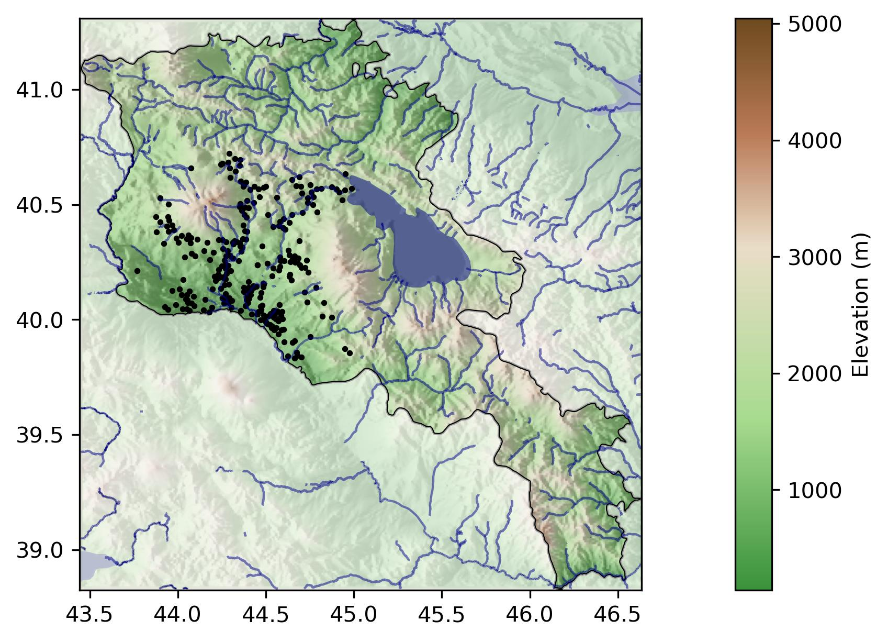
Notes: The map displays the current borders of Armenia, highlighting the study region in the Ararat Valley and surrounding areas. Black dots indicate the locations of villages included in our analysis. Elevation is represented by the color gradient, with lighter shades denoting higher altitudes. Major rivers, including the Hrazdan, and Lake Sevan are also shown.
3 Data
We draw on three primary sources: the 1831 Russian Imperial Census, Armenian Apostolic Church parish records (1838-1878), and geographic and climatic data. The census provides population demographics and village-level data, while parish records offer detailed information on births, deaths, marriages, and causes of death. Combined, these sources represent a rich demographic and socioeconomic data for mid-19th century Armenia.
Census data. We digitized micro-records from the 1831 Census of the Erivan Governorate, covering 235 villages and over 22,000 individuals.12 Additionally, we collected data from 120 villages surrounding our focus area to compute population density within 5 km buffers.13
The census records ages for male household members and for female household heads, typically widows. We use this information to derive numeracy measures based on age heaping patterns (see below).
In addition to demographic information, the census provides village-level data on livestock holdings. Because women enjoy a comparative advantage in dairy production, we use the number of dairy animals (cows, calves, and sheep) to measure the degree of gendered specialization and proxy for gender equality (Voigtlander and Voth 2013; Baten and Pleijt 2022; Ager et al. 2026). To capture the broader agricultural context, we also account for other types of livestock (buffaloes, horses, donkeys and oxen), which are more common in plow-based crop agriculture and typically involve higher male participation (Alesina et al. 2013).
The census also records the Muslim population shares by village. Following Shah Abbas’s 1605 forced relocations, some vacant Armenian villages were settled by nomadic Muslim groups (called Tatars in Russian documents). We control for these ethnic and religious differences in our analysis because their nomadic lifestyle likely affects their agricultural practices, including livestock specialization.
Finally, the census identifies non-agricultural occupations (blacksmiths, carpenters, weavers, millers) at the village level. These non-agricultural occupations indicate economic diversification and development, and their practice may require increased numeracy skills, thereby raising the returns for even basic levels of human capital.
Numeracy: To approximate human capital, we focus on basic numerical skills due to the limited availability of formal education in 19th-century Armenia. We measure it through age heaping patterns, which refer to the tendency of individuals to report ages that are multiples of five or ten, reflecting limited numerical literacy.14
In our analysis, we use both a binary indicator at the individual level and the ABCC index at the village level.15 The binary indicator, Numeracy, is defined as follows: \[ Numeracy_i = \begin{cases} 0, & \text{if } \mod(age_i,\, 5) = 0, \\ 1, & \text{otherwise}. \end{cases} \]
It captures whether individuals report precise ages (coded as 1) versus rounded ages (coded as 0). In a largely agrarian society with limited formal schooling, this distinction provides a meaningful proxy for basic numerical literacy. Additionally, we compute the ABCC index at the village level, which aggregates individual numeracy indicators to measure overall numerical literacy within each village.16 Higher values of this index indicate greater numerical literacy within the village population.
Parish records. The Armenian Apostolic Church maintained meticulous records of births, marriages, and deaths throughout the 19th and early 20th centuries. We digitized parish records from 116 villages covering the years 1838–1878 and linked them to the corresponding villages in the 1831 Census. Due to their ecclesiastical origin, these records exclude the Muslim population but provide detailed demographic information for both men and women. It is important to note that direct linkage between individual census records and parish records is not feasible, as we did not collect individuals’ names and surnames given the substantial time investment required.17 However, we implement village-year-gender-specific matching of births and deaths, as described later in this section.
While coverage is not perfect for all years and villages, Figure 3 in the Appendix shows no systematic differences in record-keeping by altitude or time. From these parish records, we derive several indicators to examine our hypotheses relating agroclimatic conditions to human capital formation and to assess alternative explanations: reported ages (at marriage and death), fertility, and mortality. Information covers both men and women, unlike the census.
Age. The utility of the age data is twofold. First, it provides us with additional samples on which to estimate numeracy, complementing the census data.18 Second, it allows us to analyze marriage timing and spousal age gaps. We leverage these variables to distinguish between our two competing mechanisms.
The female agency hypothesis posits that women’s comparative advantage in dairy production increases their intra-household bargaining power. This enhanced autonomy is expected to manifest as a delay in marriage and, crucially, a reduction in the spousal age gap. By delaying marriage, women exercise greater control over their reproductive choices; similarly, a smaller age gap reflects a move away from patriarchal arrangements where young brides are matched with older, established men.19 In contrast, the life expectancy hypothesis implies no systematic change in the age difference between spouses.
Fertility.{#part-fertility} To assess changes in fertility behavior, we calculate the number of births per woman for each year to approximate the fertility rate.20 While the construction of this fertility proxy is straightforward, obtaining a reliable denominator is constrained by data availability, as we observe female population only in the 1831 Census. Reliance on a static denominator for subsequent years introduces a measurement error that increases over time due to population growth. Moreover, because our hypothesis posits that fertility (and by extension, population growth) is higher at lower altitudes, this measurement error would be asymmetric. The overestimation would be most severe in low-altitude villages, spuriously reinforcing the negative correlation between altitude and fertility. We therefore limit our analysis to the immediate post-census years to minimize the confounding effects of differential population growth.
Mortality. Constructing reliable mortality measures from the parish records presents a significant challenge because we cannot directly link individual birth and death records. While both include information on village, year of birth (or age at death), and gender, there is no unique identifier to connect a specific death to a specific birth.21 To overcome this limitation, we construct village-year-gender-specific survival rates.
For every village, year, and gender group, we determine the number of individuals born in a particular year (e.g., 1820) based on the birth records. We then examine the death records in subsequent years (e.g., 1821, 1822, ...) to count the number of deaths reported for individuals born in that same village and year, and of the same gender.22
This approach has limitations. It does not account for migration between villages, which could lead to either over- or underestimation of survival, depending on the direction of migration flows. While large-scale migration was likely limited during this period, we acknowledge this as a potential source of bias.23 Furthermore, our method implicitly assumes that all births and deaths within a village-year-gender group are recorded in the parish registers. Underreporting of deaths, particularly infant deaths, would lead to an overestimation of survival rates.
Death causes. To distinguish between our two competing hypotheses, we examine their distinct predictions regarding the causes of mortality.
The life expectancy hypothesis posits that the lower population density typical of high-altitude regions limits the spread of infectious diseases. Because airborne pathogens are particularly sensitive to density and the frequency of close contact (see, e.g., Kermack and McKendrick 1927; Anderson and May 1992; Duncan et al. 1999), this mechanism predicts a selective reduction in mortality, concentrated among respiratory illnesses.24
In contrast, the female agency hypothesis draws on the literature arguing that women’s economic autonomy and intra-household bargaining power are greater in pastoral and dairy-farming systems, which are more common at higher altitudes, than in lowland arable farming (Boserup 1970; Alesina et al. 2013). Greater female agency facilitates a quality-quantity trade-off, leading to lower fertility and greater investment in child health and education. Crucially, such investments would enhance a child’s resilience against a wide array of health threats, regardless of their transmission vector. Consequently, this hypothesis predicts a generalized reduction in child mortality, distributed across all major causes of death.25
These competing predictions provide a clear empirical test. We categorize the causes of death in two groups based on their primary transmission mode (see Table 13 in the Appendix). The first, respiratory diseases, includes illnesses such as pneumonia, smallpox, and measles, whose transmission is predominantly airborne. The second, contagious non-respiratory diseases, include illnesses whose transmission is less directly dependent on population density.26 These differences allow us to contrast the two hypotheses.
Geographic and control variables. We obtain precise village-level measurements for altitude, coordinates, distance to rivers, potential caloric yield, temperature, precipitation, evapotranspiration, and distance to Yerevan.27
We also collect contemporary data on female representation in village councils and Yazidi population shares (Arbatli and Gomtsyan 2019) to further address the potential confounding influence of gender equality. If altitude systematically correlates with female agency, we should observe corresponding increases in women’s political participation today (Frigo and Roca Fernández 2021).28
Table 12 in Section 6 presents summary statistics for all variables used in the analysis.
4 Empirical Strategy and Results
Our empirical approach tests a series of interconnected hypotheses linking altitude to mortality, human capital, and fertility through the life expectancy mechanism. Note that, by focusing on high-altitude regions, we adopt a conservative test of our hypotheses, as these areas are typically more remote and less developed, with poorer communication infrastructure and lower market access, which typically correlate with lower development and human capital investment. However, because altitude may simultaneously influence agricultural specialization and gender roles, potentially confounding mortality effects with female agency, we systematically address this alternative explanation throughout our analysis.29
Control Variables: Throughout our analysis, we employ two sets of controls. Basic controls include the logarithm of the distance to the closest river, potential caloric yield, precipitation and evapotranspiration; and maximum and minimum temperature. Full controls add the Muslim population share and logarithm of total population that we introduce sequentially in our regressions. All regressions include mahal (region, denoted by \(m_{j}\)) fixed effects and report both robust and Conley standard errors (20 km cutoff) unless otherwise noted. Selected regressions feature additional controls as needed, discussing the rationale for their inclusion.
4.1 Altitude, Agricultural Specialization and Population Density
Our first set of regressions show that altitude correlates with agricultural specialization patterns, particularly in the animal husbandry and dairy sectors. As mentioned before, women have a comparative advantage in these sectors and, therefore, altitude may affect the quality-quantity trade-off through an increase in gender equality.30 Additionally, we also show that population density decreases with altitude, a pattern consistent with lower exposure to airborne pathogens.
Starting with agricultural practices, we examine two measures of husbandry specialization: a binary indicator for above-average husbandry animals \((I^M_j)\) and the count of husbandry animals \((N^M_j)\), both measured at the village level.31,32 We estimate:
\[ \text{Pr}(I^M_j = 1) = \Phi(\beta \, \log(Altitude_{j}) + \mathbf{Controls}_{j}^\prime \boldsymbol{\lambda} + \gamma \, \log(1 + other\,animals_j) + \alpha_{m(j)} + \epsilon_{j}) \tag{1}\]
\[ N^M_j = \beta \, \log(Altitude_{j}) + \mathbf{Controls}_{j}^\prime \boldsymbol{\lambda} + \gamma \, \log(1 + other\,animals_j) + \alpha_{m(j)} + \epsilon_{j} \tag{2}\]
where \(other\,animals_j\) controls for draft animals (buffaloes, horses, donkeys and oxen) to account for overall livestock scale and potential non-homothetic preferences. We estimate Equation Equation 1 using probit and Equation Equation 2 using negative binomial regression.
To study the relationship between altitude and population density, we employ the following regression:33
\[ \log(Pop\, Density_j) = \beta \, \log(Altitude_{j}) + \mathbf{Controls}_{j}^\prime \boldsymbol{\lambda} + \sum_{z=1,2}\gamma_z \log(animals_{z,j}) + \alpha_{m(j)} + \epsilon_{j} \tag{3}\]
We estimate Equation Equation 3 using OLS, where \(animals_{z,j}\) includes all husbandry animals (cows, calves, sheep) and draft animals (buffaloes, horses, donkeys, and oxen) to control for the overall livestock scale. Moreover, we remove the logarithm of total population from the set of controls because population density is already a function of population size.
Table 1 presents results for agricultural specialization (Columns 1–4, the first two focusing on the binary indicator) and population density (Columns 5–6). The results indicate that higher-altitude regions specialize in animal husbandry and the dairy sector, with potential implications for gender equality that call for a systematic study of its role in the quality-quantity trade-off. In Column 1, a 1% increase in altitude is associated with a 0.61 percentage-point higher probability of above-average husbandry animals. Remarkably, when controlling for Muslim population (historically nomadic pastoralists) in Column 2, the coefficient doubles and the marginal effect becomes 0.71, highlighting the importance of accounting for distinct agricultural practices. According to Column 4, a 1% increase in altitude is associated with 4.3 additional husbandry animals —the average number of husbandry animals is 367. Overall, we observe a positive gradient between altitude and agricultural practices in which women enjoy a comparative advantage.
Turning to population density, we observe an approximately 1.86% decline for each 1% increase in altitude (Columns 5–6). This pattern is consistent with the premise that high-altitude environments are less crowded, a key factor in reducing airborne pathogen transmission.
| Husbandry animals above avg. | Husbandry animals | Population density (log.) | ||||
| (1) | (2) | (3) | (4) | (5) | (6) | |
| Altitude (log.) | 3.127 | 4.413 | 1.311 | 1.156 | -1.817 | -1.861 |
| (1.547)** | (1.764)** | (0.582)** | (0.435)*** | (0.459)*** | (0.428)*** | |
| [0.837]*** | [0.142]*** | [0.504]*** | [0.410]*** | [0.200]*** | [0.219]*** | |
| Geography | Yes | Yes | Yes | Yes | Yes | Yes |
| Muslim share | No | Yes | No | Yes | No | Yes |
| Population (log.) | No | Yes | No | Yes | No | No |
| Draft animals | Yes | Yes | Yes | Yes | Yes | Yes |
| Husbandry animals (log.) | No | No | No | No | Yes | Yes |
| Draft animals (log.) | Yes | Yes | Yes | Yes | Yes | Yes |
| Mahal | Yes | Yes | Yes | Yes | Yes | Yes |
| \(R^2\) | 0.459 | 0.562 | 0.082 | 0.106 | 0.564 | 0.589 |
| Observations | 255 | 255 | 255 | 255 | 255 | 255 |
Notes: This table presents the results of regressions relating village altitude (measured in logarithm) and the probability of a village having an above-average number of husbandry animals in Columns 1–2; the expected number of husbandry animals in Columns 3–4; and population density in Columns 5–6. Columns 1 and 2 are estimated with a probit model, Columns 3 and 4 use a negative binomial model and the remaining employ OLS. Columns 1 and 3 control for the logarithm of the distance to the closest river, potential caloric yield, precipitation and evapotranspiration; and maximum and minimum temperature. Columns 2 and 4 further include the share that Muslims represent and the logarithm of total population. Columns 5 and 6 are identical to Columns 3 and 4, except for the removal of the logarithm of total population. Columns 1–4 include the logarithm of the number of non-milk producing animals and Columns 5 and 6 add the logarithm of the number of husbandry animals. All regressions include mahal (region) fixed effects. All Columns present robust standard errors in brackets, and Conley standard errors in square brackets using a cut-off distance of 20 km. \({}^{*}\, p < 0.1\), \({}^{**}\, p < 0.05\), \({}^{***}\, p < 0.01\).
4.2 Altitude and Longevity
We now test a central element of our argument: whether this lower population density is accompanied by lower mortality and longer average lifespans.
Prior to conducting the regression analysis, we present Kaplan-Meier survival curves in Figure 5 in Section 8.2. The curves demonstrate that survival rates are consistently higher in villages located above the median altitude compared to those below the median. We then examine the overall relationship between altitude and mortality using the following two specifications:
\[ \text{Pr}(Dying\, Before\, Five_{i} = 1) = \Phi(\beta \, \log(\text{Altitude}_{j(i)}) + \gamma \, \text{Male}_{i} + \mathbf{Controls}_{j(i)}^\prime \boldsymbol{\lambda} + \alpha_{m(i)} + \theta_{t(i)} + \epsilon_{i}) \tag{4}\]
\[ Age\, At\, Death_{i} = \beta \, \log(\text{Altitude}_{j(i)}) + \gamma \, \text{Male}_{i} + \mathbf{Controls}_{j(i)}^\prime \boldsymbol{\lambda} + \alpha_{m(i)} + \theta_{t(i)} + \epsilon_{i} \tag{5}\]
Besides the basic controls discussed above, both specifications include livestock controls34 and year fixed effects \(\theta_{t(i)}\). We estimate the first equation using probit, the second using negative binomial regression.35
| Child death, (0/1) | Death age | |||
| (1) | (2) | (3) | (4) | |
| Altitude (log.) | -0.923 | -0.798 | 0.753 | 0.699 |
| (0.186)*** | (0.191)*** | (0.152)*** | (0.158)*** | |
| [0.358]*** | [0.337]** | [0.220]*** | [0.189]*** | |
| Geography | Yes | Yes | Yes | Yes |
| Demography | No | Yes | No | Yes |
| Animals | Yes | Yes | Yes | Yes |
| Ind. controls | Yes | Yes | Yes | Yes |
| Year | Yes | Yes | Yes | Yes |
| Mahal | Yes | Yes | Yes | Yes |
| \(R^2\) | 0.054 | 0.055 | 0.005 | 0.005 |
| Observations | 9589 | 9589 | 9589 | 9589 |
Notes: This table presents the results of regressions relating village altitude (measured in logarithm) and the probability of dying before the age of five in columns 1–2 and the age at death for the entire population in Columns 3–4. Columns 1 and 2 are estimated with a probit model, columns 3 and 4 use a negative binomial model. Columns 1 and 3 control for the logarithm of the distance to the closest river, potential caloric yield, precipitation and evapotranspiration; and maximum and minimum temperature and the logarithm of the number of husbandry and draft animals. Columns 2 and 4 further include the share that Muslims represent and the logarithm of total population. Columns 1–4 include gender and the logarithm of the number of husbandry and draft animals. All regressions include mahal (region) fixed effects and year fixed effects. All columns present robust standard errors in brackets, and Conley standard errors in square brackets using a cut-off distance of 20 km. \({}^{*}\, p < 0.1\), \({}^{**}\, p < 0.05\), \({}^{***}\, p < 0.01\).
Table 2 shows a consistent negative association between altitude and mortality. In particular, Column 1 shows that each 1% increase in altitude is associated with a 0.34 percentage-point lower child mortality probability.36 Turning to age at death to gauge longevity, we find that higher altitude is associated with an approximately 0.182-year higher age at death for each 1% increase in altitude, with much of this pattern reflecting lower childhood mortality.37
While these results are indicative,38 the models used so far either focus on a specific outcome (child mortality) or only use data from deceased individuals (age at death). To provide a more comprehensive analysis that leverages our full sample, including those still alive at the end of the observation period, we employ Cox proportional hazard models. This method maximizes:
\[ \begin{aligned} \mathcal{L} =& \sum_{\tau=1}^{D} \left( \sum_{i\in D_{\tau}} \left[\beta\, \log(Altitude_{j(i)}) + \gamma \, Male_{i} + \mathbf{Controls}_{j(i)} + \alpha_{m(i)} +\theta_{t(i)} \right] \right. \\ & \left. - d_\tau \log \left(\sum_{l \notin D_{\tau}} \exp(\beta\, \log(Altitude_{j(l)}) + \gamma \, Male_{l} + \mathbf{Controls}_{j(l)} + \alpha_{m(i)} + \theta_{t(i)})\right)\right) \end{aligned} \tag{6}\]
where \(\tau = 1, \ldots, D\) represents the years in which deaths are observed in our sample, \(D_\tau\) denotes the set of individuals who died in year \(\tau\) and \(\theta_{t}\) represents death-year fixed effects.
| Child (age \(\leq 5\)) | Entire sample | |||
| (1) | (2) | (3) | (4) | |
| Altitude (log.) | -1.072 | -0.831 | -1.635 | -1.416 |
| [0.302]*** | [0.313]*** | [0.285]*** | [0.296]*** | |
| Geography | Yes | Yes | Yes | Yes |
| Demography | No | Yes | No | Yes |
| Animals | Yes | Yes | Yes | Yes |
| Ind. controls | Yes | Yes | Yes | Yes |
| Year | Yes | Yes | Yes | Yes |
| Mahal | Yes | Yes | Yes | Yes |
| \(R^2\) | 0.223 | 0.225 | 0.092 | 0.095 |
| Observations | 8243 | 8243 | 12597 | 12597 |
Notes: this table presents the results of Cox regressions relating village altiude (measured in logarithm) to the probability of dying. Columns 1 and 2 focus on children up to five years of age and Columns 3 and 4 consider the whole population. Columns 1 and 3 control for the logarithm of the distance to the closest river, potential caloric yield, precipitation and evapotranspiration; and maximum and minimum temperature. Columns 2 and 4 further include the share that Muslims represent and the logarithm of total population. Columns 1–4 include gender and the logarithm of the number of husbandry and draft animals. All regressions include mahal (region) fixed effects and year fixed effects. All columns present robust standard errors in brackets. \({}^{*}\, p < 0.1\), \({}^{**}\, p < 0.05\), \({}^{***}\, p < 0.01\).
Cox regression results in Table 3 are in line with our previous findings, with negative coefficients around -0.8, indicating substantially lower estimated mortality hazards at higher altitudes.39 The negative association is particularly pronounced for children under five: moving from the lowest valley to the highest mountain increases the logarithm of altitude by about 0.95, which corresponds to almost dividing by two the probability of a child dying. For mortality across the full age range, the coefficient remains negative and statistically significant, with a larger magnitude, which corresponds to an even larger estimated decline in the hazard.
Lastly, we use the cause-of-death records to assess whether the observed mortality patterns are more consistent with one interpretation than the other.40 Under the female agency hypothesis, if altitude correlates with female agency—possible, given our earlier estimates on agricultural specialization—, then a decrease in child mortality may be attributed to improved child care practices stemming from a shift in families’ preferences towards fewer, higher-quality children. This protective effect should be generalized across all causes of death. However, under the life expectancy hypothesis, increased altitude leads to longer lifespans through a lower burden of airborne diseases —due to lower population density. This mechanism predicts a more selective reduction in mortality concentrated in respiratory diseases, with no significant effect on other causes of death. Moreover, this mechanism should operate for children and the entire population alike.
To distinguish between these two mechanisms, we regress:
\[ Cause\,Of\,Death_{i} = \Phi(\beta \, \log(Altitude_{j(i)}) + \gamma \, Male_{i} + \mathbf{Controls}_{j(i)}^\prime \boldsymbol{\lambda} + \alpha_{m(i)} + \theta_{t(i)} + \epsilon_{i}), \tag{7}\]
where \(Cause\,Of\,Death_{i}\) is a binary indicator for whether individual \(i\) died from a specific cause, such as respiratory diseases or other contagious diseases. Table 4 presents the results of our cause-specific mortality analysis, estimated using a probit model as described in Equation 7. Columns 1–4 focus on mortality attributed to respiratory diseases, and Columns 5–8 examine mortality from other contagious, non-respiratory diseases. We present results separately for child mortality (deaths up to age five, Columns 1–2 and 5–6) and mortality across the full age distribution (Columns 3–4 and 7–8).41
| Resp. dis. (age \(\leq 5\)) | Resp. dis. (all sample) | Cont., non-resp. (age \(\leq 5\)) | Cont., non-resp. (all sample) | |||||
| (1) | (2) | (3) | (4) | (5) | (6) | (7) | (8) | |
| Altitude (log.) | -1.208 | -1.718 | -0.973 | -1.106 | 0.141 | 0.528 | -1.544 | -1.474 |
| (0.347)*** | (0.351)*** | (0.208)*** | (0.217)*** | (0.582) | (0.634) | (0.366)*** | (0.388)*** | |
| [0.497]** | [0.639]*** | [0.328]*** | [0.377]*** | [1.076] | [1.034] | [0.975] | [0.985] | |
| Geography | Yes | Yes | Yes | Yes | Yes | Yes | Yes | Yes |
| Demography | No | Yes | No | Yes | No | Yes | No | Yes |
| Animals | Yes | Yes | Yes | Yes | Yes | Yes | Yes | Yes |
| Ind. controls | Yes | Yes | Yes | Yes | Yes | Yes | Yes | Yes |
| Year | Yes | Yes | Yes | Yes | Yes | Yes | Yes | Yes |
| Mahal | Yes | Yes | Yes | Yes | Yes | Yes | Yes | Yes |
| \(R^2\) | 0.113 | 0.123 | 0.069 | 0.073 | 0.300 | 0.308 | 0.260 | 0.261 |
| Observations | 3470 | 3470 | 8932 | 8932 | 3105 | 3105 | 8783 | 8783 |
Notes: This table presents the results of regressions relating village altitude (measured in logarithm) to the probability of dying of certain causes. Columns 1–4 focus on respiratory diseases and Columns 5–8 focus on contagious, non-respiratory diseases. Columns 1–2 and 3–6 are estimated on a subsample consisting of children aged five years or less, while Columns 3–4 and 7–8 consider the entire population. All columns are estimated using a probit model. Odd columns control for the logarithm of the distance to the closest river, potential caloric yield, precipitation and evapotranspiration; and maximum and minimum temperature. Even columns further include the share that Muslims represent and the logarithm of total population. All columns include gender and the logarithm of the number of husbandry and draft animals. All regressions include mahal (region) fixed effects and year fixed effects. All columns present robust standard errors in brackets, and Conley standard errors in square brackets using a cut-off distance of 20 km. \({}^{*}\, p < 0.1\), \({}^{**}\, p < 0.05\), \({}^{***}\, p < 0.01\).
Table 4 yields results inconsistent with the female agency hypothesis. While altitude is significantly negatively associated with respiratory disease mortality (Columns 1–4) for both children and adults, it shows no significant association with other contagious diseases (Columns 5–8). This selective pattern is harder to reconcile with the female agency interpretation, which would point to better care practices and a more generalized improvement in child health across causes. Furthermore, the point estimate for other contagious diseases among children is positive; while not statistically distinguishable from zero, the fact that the coefficient trends toward higher rather than lower mortality is difficult to reconcile with a theory predicated on improved child quality.
Robustness checks in Table 17 (Section 8.2) assess the sensitivity of our results to additional causes of death. First, higher-altitude regions report more deaths from “other causes”, a catch-all category for deaths not attributed to contagious diseases or old age. This result is consistent with the previous pattern of lower estimated probabilities of dying from contagious diseases, as deaths must be registered under some cause. Second, we investigate reporting “old age” as a cause of death. A potential concern with historical cause-of-death data is differential reporting bias. If, at higher altitudes, record keepers were systematically more likely to attribute deaths to “old age” —perhaps due to less precise diagnoses— this could confound our cause-specific mortality analysis. Our results do not indicate this to be the case. Last, a placebo test examining mortality “at birth” or very shortly thereafter finds no statistically significant association with altitude, as expected since newborns have not yet been exposed to airborne diseases or other contagious pathogens.
4.3 Altitude and the Quality-Quantity Trade-Off
4.3.1 Numeracy
We operationalize human capital using a binary indicator, \(Numeracy_i\), equal to one if the reported age does not end in 5 or 0. Since innumerate individuals tend to round their ages, precise reporting proxies for basic numeracy. We estimate:
\[ Numeracy_{i} = \Phi(\beta \, \log(Altitude_{j(i)}) + \mathbf{Individual}_{i}^\prime \boldsymbol{\theta} + \mathbf{Controls}_{j(i)}^\prime \boldsymbol{\lambda} + \alpha_{m(i)} + \epsilon_{i}) \tag{8}\]
where \(\mathbf{Individual}_{i}\) includes age, age squared, household size, household sex ratio, and religion.42 We restrict analysis to ages 23–62 following theoretical foundations on age-heaping.43 Table 5 presents the results of our probit regressions, estimating Equation Equation 8. Columns 1 and 2 use the entire sample, Columns 3 and 4 focus on men and Columns 5 and 6 on women.
| Entire sample | Male sample | Female sample | ||||
| (1) | (2) | (3) | (4) | (5) | (6) | |
| Altitude (log.) | 1.377 | 1.699 | 1.436 | 1.754 | 1.852 | 3.883 |
| (0.252)*** | (0.270)*** | (0.262)*** | (0.283)*** | (1.545) | (1.942)** | |
| [0.484]*** | [0.550]*** | [0.494]*** | [0.574]*** | [0.872]** | [1.058]*** | |
| Geography | Yes | Yes | Yes | Yes | Yes | Yes |
| Demography | No | Yes | No | Yes | No | Yes |
| Ind. controls | Yes | Yes | Yes | Yes | Yes | Yes |
| Mahal | Yes | Yes | Yes | Yes | Yes | Yes |
| \(R^2\) | 0.046 | 0.050 | 0.040 | 0.044 | 0.046 | 0.051 |
| Observations | 9566 | 9566 | 8790 | 8790 | 775 | 775 |
Notes: This table presents the results of regressions relating village altitude (measured in logarithm) and numeracy skills, measured by the (inverse) probability of age-heaping. Columns 1 and 2 focus on the whole sample, Columns 3 and 4 on men, and Columns 5 and 6 on women. All columns are estimated using a probit model. Odd columns control for the logarithm of the distance to the closest river, potential caloric yield, precipitation and evapotranspiration; and maximum and minimum temperature. Even columns further include the share that Muslims represent and the logarithm of total population. All columns include individual-level controls: age, its square, household size, Muslim religion, and the share women represent in each household. All regressions include mahal (region) fixed effects. All columns present robust standard errors in brackets, and Conley standard errors in square brackets using a cut-off distance of 20 km. \({}^{*}\, p < 0.1\), \({}^{**}\, p < 0.05\), \({}^{***}\, p < 0.01\).
The results show a strong positive association between altitude and numeracy, with positive and statistically significant coefficients on the logarithm of altitude across all specifications. A 1% increase in altitude is associated with a 0.142 percentage-point increase in our numeracy measure for the whole sample and a 0.132 percentage-point increase for men. These effects are substantial given that only 4.6% of male adults report non-rounded ages. However, these estimates should be interpreted cautiously given the substantially smaller sample size for women, who are included only as widowed household heads.44
We perform two exercises to verify that these patterns are not artifacts of the specific age range or local demographic composition. First, we confirm that our results are not sensitive to the upper age bound; estimating Equation Equation 8 on a restricted sample of younger adults (ages 23–45) provides qualitatively equivalent results (see Figure Figure 4 in the Appendix). Second, we address the possibility that the observed altitude effect is confounded by systematic differences in the age structure of villages. In Table 14 in the Appendix, we re-estimate Equation Equation 8 adding a full set of village-level age-share controls (shares in 5- and 10-year bins). The coefficient on the logarithm of altitude remains essentially unchanged.
Furthermore, we have considered the possibility that responses to enumerators’ questions were provided by the household head and thus did not reflect each individual’s numeracy but that of the head.45 To address this concern, we develop three complementary household-level metrics that assess age-heaping patterns while accounting for the household head’s role in reporting family information.
First, we construct a household-level index of age heaping. We compute the cumulative probability of observing the reported number of heaped ages (or fewer) in a household with \(N\) members, assuming ages are reported randomly.46 Intuitively, this metric acts as a percentile rank of heaping intensity. Because the cumulative probability strictly increases with the number of rounded ages, a household with an excessively high number of heaped ages will fall in the far right tail of the distribution, receiving a score close to 1 (indicating low numeracy). Conversely, a household reporting precise ages falls in the left tail, receiving a score close to 0 (indicating high numeracy). Since our main results relate higher altitude with better cognitive outcomes, we expect households at higher elevations to exhibit less rounding behavior, yielding a negative coefficient on altitude.
Second, we conceptualize numeracy as the household’s capacity to track family information over time. While parents almost universally know the ages of toddlers, this precision fades as children grow. We measure this “decay” of age precision through the share of children aged 3–18 (excluding the household head) whose ages are reported precisely, that is, not ending in 0 or 5.47 This metric proxies for the household’s “retention” of numerical information: a higher share indicates better tracking capacity.
Third, we estimate the “numeracy horizon”: the maximum age at which a household demonstrates precise tracking of a dependent. We define this as the age of the oldest household member (excluding the head) reported with a non-heaped age.48 A higher horizon implies that the household maintains precise knowledge further into a dependent’s life, effectively flattening the “slope of forgetting.”
Table 6 presents the results of these three specifications. Columns 1–2 report the probability of systematic heaping, estimated using OLS. The results are strongly consistent with our hypothesis: higher altitude is associated with significantly lower heaping probabilities, indicating greater household-level numeracy. Columns 3–4 report the share of precisely reported ages among children aged 3–18, also estimated using OLS. Consistent with our tracking-capacity interpretation, households at higher altitudes exhibit a significantly higher share of non-heaped ages. Finally, Columns 5–6 estimate the numeracy horizon using a negative binomial model, given that this outcome is a non-negative count variable. The positive and significant coefficients indicate that households at higher altitudes maintain precise age information for older dependents, extending their numeracy horizon. Taken together, these results suggest that the altitude-numeracy relationship is also visible at the household level and persists even when accounting for potential reporting bias by household heads. In Appendix Section 8.1, we present additional specifications examining household heads’ own age-heaping and difference-in-differences estimates comparing age precision across child age groups within households.
| Prob. systematic heaping | Share precise ages | Max. unheaped age | ||||
| (1) | (2) | (3) | (4) | (5) | (6) | |
| Altitude (log.) | -0.030 | -0.032 | 0.084 | 0.085 | 0.456 | 0.532 |
| (0.007)*** | (0.007)*** | (0.068) | (0.070) | (0.143)*** | (0.146)*** | |
| [0.012]** | [0.012]*** | [0.038]** | [0.030]*** | [0.199]** | [0.193]*** | |
| Geography | Yes | Yes | Yes | Yes | Yes | Yes |
| Demography | No | Yes | No | Yes | No | Yes |
| Ind. controls | Yes | Yes | Yes | Yes | Yes | Yes |
| Mahal | Yes | Yes | Yes | Yes | Yes | Yes |
| \(R^2\) | 0.063 | 0.063 | 0.015 | 0.016 | 0.023 | 0.023 |
| Observations | 7134 | 7134 | 2654 | 2654 | 3524 | 3524 |
Notes: This table presents the results of regressions relating village altitude (measured in logarithm) and numeracy skills at the household level. Columns 1–2 report the probability of systematic heaping: the cumulative probability of observing the actual number (or fewer) of heaped household members under the null hypothesis of random reporting. Lower values indicate fewer heaped ages than expected by chance, suggesting greater numeracy. Columns 3–4 report the share of children aged 3–18 with non-heaped ages, measuring the household’s capacity to track family information over time. Columns 5–6 report the ``numeracy horizon’’: the age of the oldest household member (excluding the head) with a precisely reported age. All specifications exclude the household head from the dependent variable calculation but control for the logarithm of head’s age and its square, household size, Muslim religion, and the share of women in each household. Columns 1–4 are estimated using OLS; Columns 5–6 use a negative binomial model. Odd columns control for the logarithm of the distance to the closest river, potential caloric yield, precipitation and evapotranspiration; and maximum and minimum temperature. Even columns further include the share that Muslims represent and the logarithm of total population. All regressions include the number of relevant family members for each regression. All regressions include mahal (region) fixed effects. All columns present robust standard errors in brackets and Conley standard errors in square brackets using a cut-off distance of 20 km. \({}^{*}\, p < 0.1\), \({}^{**}\, p < 0.05\), \({}^{***}\, p < 0.01\).
To assess the robustness of our numeracy findings we compute the ABCC index (A’Hearn et al. 2009) at the village level, focusing on the same sample of individuals aged 23–62. Higher values of the index reveal more advanced numerical skills. Table 7 presents the results of this robustness test, mirroring the previous specification which is augmented to include village-average age and age-squared (of those in ABCC calculation), and village sex ratio as controls49. The first two columns employ the whole sample while the last two focus on villages with at least 20 individuals aged 23–62 to ensure a sufficient sample size for the ABCC index calculation. Across all columns, we observe a positive coefficient on the logarithm of altitude. This finding is in line with our earlier results, suggesting that higher altitude is associated with more advanced numeracy skills.
| ABCC index | ABCC index, village pop. \(> 20\) | |||
| (1) | (2) | (3) | (4) | |
| Altitude (log.) | 14.255 | 11.348 | 11.853 | 12.796 |
| (5.506)** | (3.993)*** | (3.405)*** | (3.797)*** | |
| [2.462]*** | [4.263]*** | [3.578]*** | [3.887]*** | |
| Geography | Yes | Yes | Yes | Yes |
| Demography | No | Yes | No | Yes |
| Avg. individual | Yes | Yes | Yes | Yes |
| \(R^2\) | 0.104 | 0.123 | 0.197 | 0.202 |
| Observations | 173 | 173 | 164 | 164 |
Notes: This table presents the results of regressions relating village altitude (measured in logarithm) and numeracy skills, measured by the ABCC index. Odd Columns control for the logarithm of the distance to the closest river, potential caloric yield, precipitation and evapotranspiration; and maximum and minimum temperature and average individual-level controls (age and age-squared of those in ABCC calculation), and village sex ratio as controls, while even Columns expand the controls to include village-level characteristics: the share of Muslims and the logarithm of total population. Columns 1 and 2 use the whole sample, while Columns 3 and 4 focus on villages with at least 20 individuals for the ABCC index calculation. All columns are estimated using an OLS model, with robust standard errors.
4.3.2 Fertility
Finally, we turn to the counterpart of the quality-quantity trade-off: fertility. According to this theory, as human capital investment increases with altitude, fertility should decrease.
Due to the limitations of our historical data, measuring fertility directly presents several challenges, with individual-level fertility histories being unavailable. Instead, we rely on aggregate measures at the village level on the number of annual births per woman. This figure is obtained dividing the births registered in the parish records for each year by female population from the census. As indicated in Section Section 3, we only have data on Christian births, and the figure for the number of women corresponds to that of 1831. We restrict analysis to 1831–1850 to minimize bias from population growth when using a constant denominator.50 Finally, we divide the number of births by the total female population and the Armenian female population, the latter to better match the Christian birth numerators.
Regressions follow Equation Equation 1 introducing the number of village-level marriages, as marriage timing determined fertility in pre-demographic transition societies (Cinnirella et al. 2017).
| Fertility | Fertility (Armenian sample) | |||
| (1) | (2) | (3) | (4) | |
| Altitude (log.) | -1.105 | -1.361 | -0.937 | -1.291 |
| (1.584) | (1.587) | (1.573) | (1.540) | |
| [0.824] | [0.506]*** | [0.895] | [0.461]*** | |
| Geography | Yes | Yes | Yes | Yes |
| Demography | No | Yes | No | Yes |
| Animals | Yes | Yes | Yes | Yes |
| Marriages | Yes | Yes | Yes | Yes |
| Year | Yes | Yes | Yes | Yes |
| Mahal | Yes | Yes | Yes | Yes |
| \(R^2\) | 0.606 | 0.614 | 0.595 | 0.616 |
| Observations | 88 | 88 | 88 | 88 |
Notes: This table presents the results of regressions relating village altitude and fertility (both measured in logarithm), measured as the number of (Christian) yearly births relative to the female population. Columns 1 and 2 consider the entire female population in the denominator, while Columns 3 and 4 use only the Armenian female population. All columns are estimated using an OLS model. Odd columns control for the logarithm of the distance to the closest river, potential caloric yield, precipitation and evapotranspiration; and maximum and minimum temperature and the logarithm of the number of husbandry and draft animals. Even columns further include the share that Muslims represent and the logarithm of total population. All columns include the logarithm of the number of marriages in the previous year and the logarithm of groom and bride average marital age as controls. All regressions include mahal (region) fixed effects and year fixed effects. All columns present robust standard errors in brackets, and Conley standard errors in square brackets using a cut-off distance of 20 km. \({}^{*}\, p < 0.1\), \({}^{**}\, p < 0.05\), \({}^{***}\, p < 0.01\).
Table 8 shows the results, which display a consistently negative and significant altitude-fertility association, complementing the previous findings on human capital in light of the quality-quantity trade-off. In the more comprehensive Column 2, the coefficient (-0.035) indicates that an additional 1% increase in altitude is associated with about 1.36% fewer annual births per woman. Columns 3–4 use Armenian denominators to better align numerator and denominator, yielding a similar coefficient.
4.4 Robustness
While our primary analyses point to patterns more consistent with the life expectancy interpretation linking altitude to human capital and fertility, we further address the alternative hypothesis that increased gender equality at higher altitudes might be a confounding factor. To begin with, our empirical setting is particularly demanding: high-altitude villages tend to be more isolated and face greater barriers to development, infrastructure, and market access. Thus, positive associations are especially noteworthy given these inherent disadvantages.
Contemporary Political Representation: A first test uses contemporary data to examine whether altitude continues to influence female political representation. If altitude historically promoted female agency through agricultural specialization, these effects might persist and women be more present in politics today (Frigo and Roca Fernández 2021). We examine 2016 village council elections, measuring female candidates’ absolute numbers, their share among candidates, and women’s share of elected councilors, so that both participation (women feel more empowered) and election outcomes (women are perceived as capable leaders) are considered. We regress these measures on altitude and controls mirroring our agricultural specialization specifications (Equation Equation 1), incorporating additional contemporary controls: distance to Yerevan and Yazidi ethnic minority share. Table 9 shows no evidence of greater female political representation at higher altitudes, contradicting the female agency hypothesis.
Notes: This table presents the results of regressions relating village altiude (measured in logarithm) and female agency, proxied by electoral outcomes. Columns 1 and 2 focus on the number of female candidates, Columns 3 and 4 on the share they represent and Columns 5 and 6 on the share of elected candidates that are women. Columns 1 and 2 follow a negative binomial model whereas Columns 3–6 use an OLS model. Odd columns control for the logarithm of the distance to the closest river, potential caloric yield, precipitation and evapotranspiration; and maximum and minimum temperature. Even columns further include the share that Muslims represent and the logarithm of total population. All columns control for the (logarithm) of the distance to Yerevan and the share the Yazidi ethnic minority represent. All regressions include mahal (region) fixed effects and election-year fixed effects. All columns present robust standard errors in brackets, and Conley standard errors in square brackets using a cut-off distance of 20 km. \({}^{*}\, p < 0.1\), \({}^{**}\, p < 0.05\), \({}^{***}\, p < 0.01\).
Marriage Patterns: Secondly, models of female agency suggest that increased female autonomy tends to reduce the spousal age gap, with the reduction driven primarily by women marrying older as a means to control fertility (Moor and Van Zanden 2009). We test these predictions by analyzing first marriages recorded in parish registers using:
\[ Marital\, Outcome_{i} = \beta \, \log(Altitude_{j(i)}) + \mathbf{Controls}_{j(i)}^\prime \boldsymbol{\lambda} + \boldsymbol{\eta_{t(i)}} + \epsilon_{i} \tag{9}\]
We estimate separate regressions for the spousal age gap (in logarithm), the bride’s age, and the groom’s age at first marriage. All specifications include year fixed effects, with basic controls in odd columns and full controls in even columns.
| Spousal age gap | Wife’s age | Groom’s age | ||||
| (1) | (2) | (3) | (4) | (5) | (6) | |
| Altitude (log.) | 0.047 | 0.052 | -0.075 | -0.060 | -0.034 | -0.013 |
| (0.014)*** | (0.014)*** | (0.017)*** | (0.017)*** | (0.018)* | (0.018) | |
| [0.021]** | [0.028]* | [0.048] | [0.048] | [0.055] | [0.053] | |
| Geography | Yes | Yes | Yes | Yes | Yes | Yes |
| Demography | No | Yes | No | Yes | No | Yes |
| Year | Yes | Yes | Yes | Yes | Yes | Yes |
| Mahal | Yes | Yes | Yes | Yes | Yes | Yes |
| \(R^2\) | 0.232 | 0.232 | 0.004 | 0.004 | 0.006 | 0.006 |
| Observations | 7227 | 7227 | 7232 | 7232 | 7227 | 7227 |
Notes: This table presents the results of regressions relating village altitude (measured in logarithm) to marriage patterns. Columns 1 and 2 examine spousal age gaps at first marriage, Columns 3 and 4 focus on bride’s age, and Columns 5 and 6 on groom’s age. age at marriage and Columns 5 and 6 on the groom’s age at marriage. Columns 1 and 2 are estimated by OLS and Columns 3–6 follow a negative binomial model. Odd columns control for the logarithm of the distance to the closest river, potential caloric yield, precipitation and evapotranspiration; and maximum and minimum temperature. Even columns further include the share that Muslims represent and the logarithm of total population. All specifications include year fixed effects and control for the logarithm of the sex ratio. All regressions include mahal (region) fixed effects. All columns present robust standard errors in brackets, and Conley standard errors in square brackets using a cut-off distance of 20 km. \({}^{*}\, p < 0.1\), \({}^{**}\, p < 0.05\), \({}^{***}\, p < 0.01\).
Table 10 provides no support for the female agency hypothesis. If higher altitude enhanced female bargaining power, we would expect a narrower spousal age gap driven by women marrying later. Neither prediction finds support in the data. Point estimates for the age gap are consistently positive across specifications (Columns 1–2), suggesting, if anything, a widening of the gap at higher altitudes: the opposite of what female agency would predict. Meanwhile, the bride’s age at first marriage shows no tendency to increase with altitude (Columns 3–4), which is not consistent with the central mechanism through which female autonomy is theorized to operate. The groom’s age at marriage is likewise unaffected (Columns 5–6).51 These patterns are difficult to reconcile with the view that altitude operates through enhanced female agency.
Moreover, standard household bargaining models predict that reduced female autonomy leads to higher fertility, yet Table 8 presented the opposite. This implies that the incentives for human capital investment and increased longevity documented in Section Section 4.2 are sufficiently strong to override the fertility-increasing tendencies typically associated with wider spousal age gaps (Le Bris and Tallec 2022).
Economic Development: Finally, we note that the previous results may instead reflect an income effect at higher altitudes. To test this, we examine the presence of craftsmen in villages: Engel’s law implies that wealthier villages demand more artisan goods. We examine the presence of craftsmen by looking at their craftsman numbers (negative binomial regression) and their population share (OLS) using \[ Outcome_{j} = f(\beta \, \log(\text{Altitude}_{j}) + \mathbf{Controls}_{j}^\prime \boldsymbol{\lambda} + \epsilon_{j}), \tag{10}\]
where the set of controls adds the logarithm of the number of husbandry and draft animals, to the common controls used previously. Table Table 11 presents the results of these regressions. In general, the results do not support the hypothesis that artisans preferentially settled or thrived in higher-altitude regions.52 This bolsters our argument that the observed improvements in human capital at higher altitudes are not simply a byproduct of wealth differences or differential returns to education, making the life expectancy interpretation more plausible for the observed patterns.
Notes: This table presents the results of regressions relating village altitude (measured in logarithm) and the presence of craftsmen. Columns 1 and 2 consider the number of craftsmen in a village, whereas Columns 3 and 4 are their percentual representativeness. Columns 1 and 2 follow a negative binomial model and Columns 3 and 4 an OLS model. Odd columns control for the logarithm of the distance to the closest river, potential caloric yield, precipitation and evapotranspiration; and maximum and minimum temperature and the logarithm of the number of husbandry and draft animals. Even columns further include the share that Muslims represent and the logarithm of total population. All regressions include the logarithm of the number of husbandry and non-milk producing animals. All regressions include mahal (region) fixed effects. All columns present robust standard errors in brackets and Conley standard errors in square brackets using a cut-off distance of 20 km. \({}^{*}\, p < 0.1\), \({}^{**}\, p < 0.05\), \({}^{***}\, p < 0.01\).
5 Conclusions
This paper presents new empirical evidence on how geographic variation in mortality is associated with human capital investment and fertility transitions in pre-industrial societies. Analyzing mid-19th century Armenian data, we show that higher altitudes are associated with lower mortality, especially for respiratory diseases. Critically, higher elevation locations also show demographic patterns consistent with the quality-quantity trade-off: lower fertility and higher human capital, captured by basic numeracy skills. These patterns are consistent with the Ben-Porath mechanism and offer suggestive micro-level evidence in line with the mortality-based interpretation proposed by Cervellati and Sunde (2011, 2015). Importantly, we find no evidence that these patterns are readily accounted for by differences in wealth or increased female autonomy.
Conflict of Interest
The authors declare that they have no conflict of interest.
Data Availability
All the data used in this paper will be distributed as a replication package. The package contains (i) data collected by the authors as part of this research and (ii) publicly available geographic layers that were obtained under open or public-domain licences permitting redistribution. Full details on every file, its original source, and the exact licensing terms are provided in the README file included in the replication package.
6 Summary statistics
For a comprehensive overview of the data, Appendix Table Table 12 presents the full set of summary statistics for all outcome variables, categorized by data source. These categories include geographic characteristics, Census-derived measures, marriage records, household-level details, birth and death statistics, electoral outcomes, and other relevant variables.
The classification of causes of death is presented in Table 13. We group the causes into three categories based on their mode of transmission: respiratory, contagious non-respiratory, and residual (encompassing all other causes). The classification primarily follows the World Health Organization’s International Classification of Diseases (ICD). However, the death causes recorded in the parish registers are not always complete or precisely defined. In such cases, we rely on supplementary information from Armenian et al. (1993), which provides detailed descriptions of diseases historically recorded in Armenian parish records.53 Additionally, although “cough” is not a disease in itself, we classify it as respiratory given its typical association with droplet transmission.
| Mean | SD | Min | Max | N | |
|---|---|---|---|---|---|
| **Panel A: Geographic Variables** | |||||
| Altitude (m) | 1298.57 | 458.96 | 817.25 | 2190.2 | 255 |
| Distance to river (m) | 2155.91 | 2495.48 | 3.05 | 16681.2 | 255 |
| Evap. (log) | 6.81 | 0.12 | 6.48 | 7.08 | 255 |
| Max. temp. | 36.01 | 3.21 | 30.11 | 43.52 | 255 |
| Min. temp. | -33.44 | 2.11 | -41.85 | -30.25 | 255 |
| Precipitation (log) | 6.21 | 0.22 | 5.73 | 6.67 | 255 |
| Soil cal. yield (log) | 8.3 | 0.08 | 7.94 | 8.43 | 255 |
| **Panel B: Census data** | |||||
| *Village-level* | |||||
| Male share | 0.53 | 0.04 | 0.42 | 0.67 | 255 |
| Milk animals | 361.98 | 409.27 | 0 | 3031 | 255 |
| Milk animals above avg. | 0.35 | 0.48 | 0 | 1 | 255 |
| Muslim share | 0.44 | 0.45 | 0 | 1 | 255 |
| Non-milk animals | 144.89 | 131.14 | 0 | 771 | 255 |
| Total pop. | 225.78 | 245.16 | 9 | 2175 | 255 |
| *ABCC Index* | |||||
| ABCC Index | 6.17 | 9.52 | 0 | 100 | 180 |
| ABCC Index (pop. > 20) | 5.74 | 6.37 | 0 | 37.5 | 170 |
| *Individual-level* | |||||
| Age | 22.55 | 18.08 | 0 | 120 | 24561 |
| Female share | 0.46 | 0.17 | 0 | 1 | 7558 |
| Household size | 5.69 | 3.18 | 1 | 46 | 7558 |
| Numeracy (age between 23 and 62) | 0.05 | 0.22 | 0 | 1 | 9849 |
| Numeracy (all individuals) | 0.35 | 0.48 | 0 | 1 | 24561 |
| *Family-level (ages above 10)* | |||||
| Prob. systematic heaping | 0.97 | 0.07 | 0.8 | 1 | 15397 |
| **Panel C: Parish data** | |||||
| *Marriages* | |||||
| Female age | 17.17 | 1.67 | 9 | 35 | 7624 |
| Male age | 19.91 | 2.12 | 10 | 45 | 7711 |
| Spousal age gap (M - F) | 2.72 | 1.69 | -8 | 22 | 7618 |
| *Death records* | |||||
| Death age | 25.82 | 27.06 | 0 | 115 | 10328 |
| Death at birth | 0.01 | 0.1 | 0 | 1 | 4258 |
| Death due to cont. diseases | 0.08 | 0.27 | 0 | 1 | 3738 |
| Death due to cont. diseases (alt.) | 0.09 | 0.28 | 0 | 1 | 3738 |
| Death due to old age | 0.02 | 0.15 | 0 | 1 | 9591 |
| Death due to old age (alt.) | 0.02 | 0.15 | 0 | 1 | 9591 |
| Death due to resp. airborne | 0.22 | 0.42 | 0 | 1 | 9591 |
| *Birth records* | |||||
| Fertility | 0.02 | 0.06 | 0 | 1.18 | 1352 |
| Fertility (Armenian) | 0.04 | 0.48 | 0 | 12 | 1352 |
| **Panel D: Modern-day Variables** | |||||
| *Elections, 2016* | |||||
| Female candidates | 1.04 | 1.21 | 0 | 6 | 352 |
| Female share (candidates) | 0.13 | 0.16 | 0 | 0.86 | 352 |
| Female share (elected) | 0.12 | 0.16 | 0 | 0.86 | 351 |
| *Other variables* | |||||
| Distance to Yerevan | 39.61 | 19.98 | 8 | 155 | 231 |
| Yazidi share | 0.05 | 0.2 | 0 | 1 | 220 |
Notes: Summary statistics
lccc Category & Death reason & N & Freq ( **Respiratory** & & &
& Pneumonia & 1065 & 10.06
& Smallpox & 662 & 6.25
& Cough & 259 & 2.45
& Measles & 192 & 1.81
& Plague & 73 & 0.69
& Cold & 42 & 0.40
& Whooping cough & 32 & 0.30
**Contagious non-respiratory** & & &
& Cholera & 337 & 3.18
& Typhus & 198 & 1.87
& Malaria & 1 & 0.01
& Scabies & 1 & 0.01
**Residual** & & &
& Other & 5527 & 52.21
& Reason not mentioned & 996 & 9.41
& Not classified & 744 & 7.03
& Old age & 219 & 2.07
& At birth & 131 & 1.24
& Erysipelothrix rhusiopathiae & 108 & 1.02
**Total** & & 10587 & 100.00
Notes: The table reports the distribution of recorded death causes in the sample. Causes are grouped into respiratory diseases, contagious non-respiratory diseases, and residual categories. In the Other subcategory, we include all diseases that are not respiratory and contagious non-respiratory. Not classified cases have recorded information, but the text is too ambiguous to classify into a specific category. Frequencies are shown as percentages of total deaths. a Erysipelothrix rhusiopathiae in Armenian sources is considered a contagious disease. We classify it here as a non-contagious disease, but Table 18 in the Appendix presents the results when it is classified as contagious.
7 Differential missing data
To validate the quality of our data, Figure Figure 2 benchmarks the 1831 age distribution against the 1897 General Census of the Russian Empire, revealing remarkably similar heaping patterns that suggest the irregularities in our source reflect structural characteristics of the period rather than source-specific measurement errors.
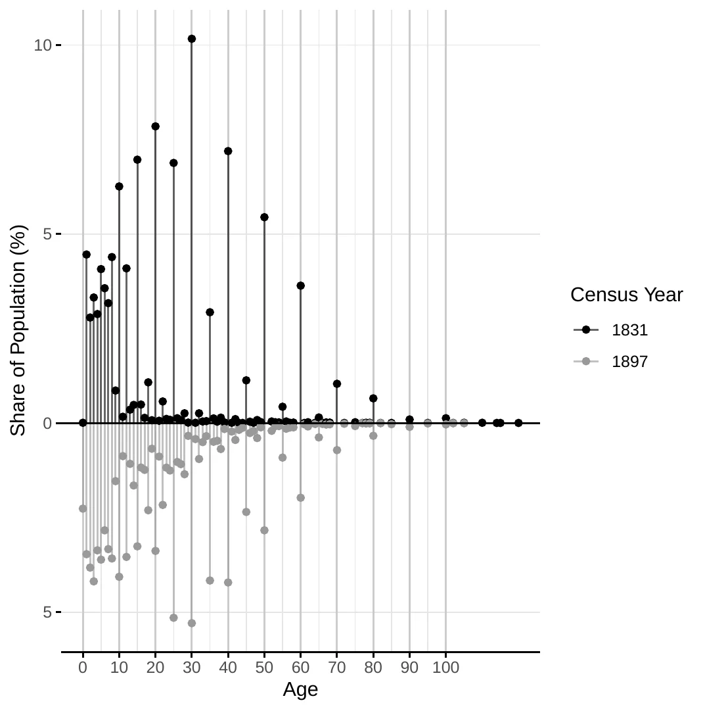
Notes: The figure shows the share of individuals in each age group according to the 1831 and 1897 population censuses in Erivan Governorate (Russian guberniya), excluding the city of Yerevan. The y-axis reports the share in percent, and the x-axis denotes age.
The Armenian parish records are not complete for all observations, with some displaying missing information, for instance, about the month of birth. Because we compute age-specific mortality profiles by linking births and deaths, a differential prevalence of missing data by altitude could bias our results. Figure Figure 3 analyzes this possibility by plotting the coefficient associated to year categories on regressions relating the percentage of observations with missing data over the total number of observations. In general, we do not find evidence of differential reporting over time nor over time and by altitude.
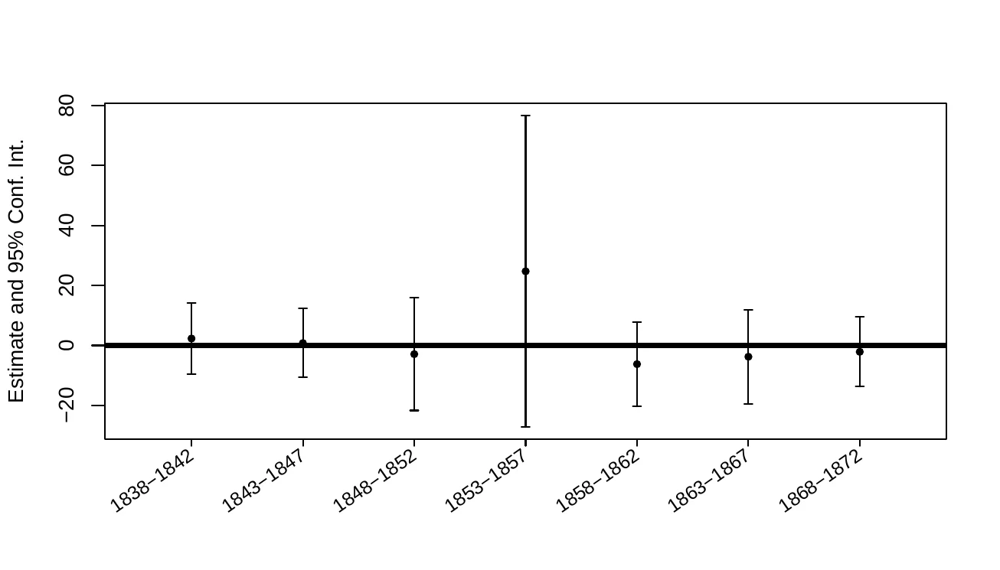
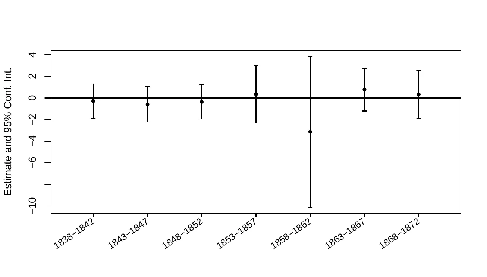
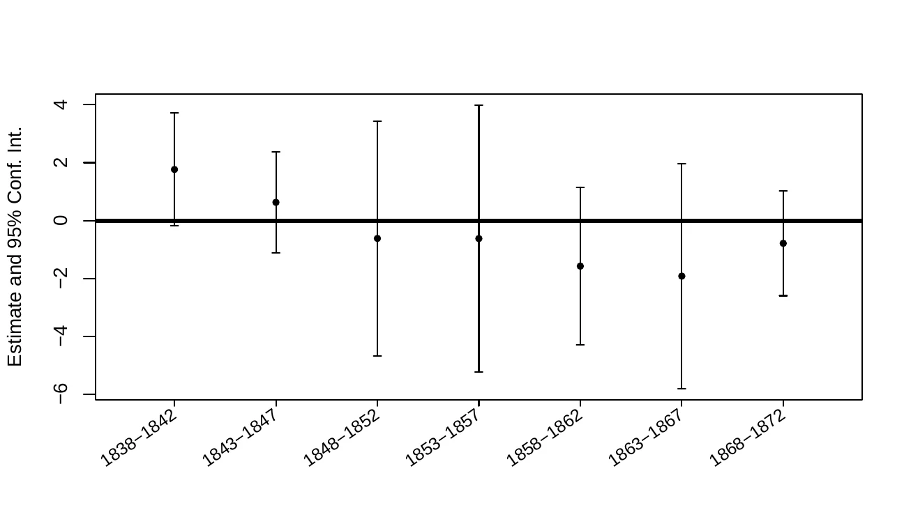
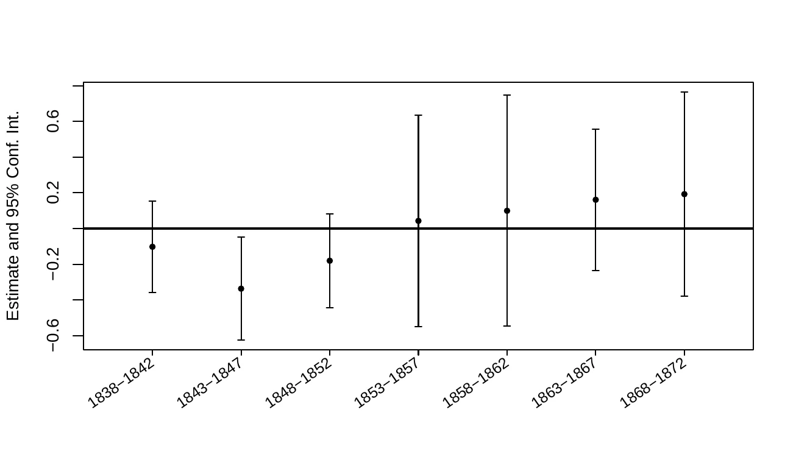
Notes: This figure plots the results of regressions relating the percentage number of observations with missing data on grouped-year dummies. Regressions focus separately on birth and death records.
8 Additional results
This section presents additional specifications and estimation methods to assess the robustness of our main findings.
8.1 Numeracy
8.1.0.1 Age-structure controls.
To ensure that variation in age-heaping across villages does not reflect differences in age composition rather than true numeracy, we re-estimated our human-capital specifications including a comprehensive set of village-level age-share controls. Specifically, we construct age shares in five-year bins up to age 20 and ten-year bins thereafter and include these shares as controls in the probit specifications for \(Numeracy_i\). Table 14 reports these results. The inclusion of the age-structure controls leaves the coefficient on the logarithm of altitude effectively unchanged in magnitude and statistical significance, suggesting that differences in the age distribution across villages are unlikely to account for our main numeracy findings. For transparency, Figure Figure 4 plots the altitude coefficient when varying the lower age cutoff (23–45), showing stability of the estimated effect across reasonable sample restrictions.
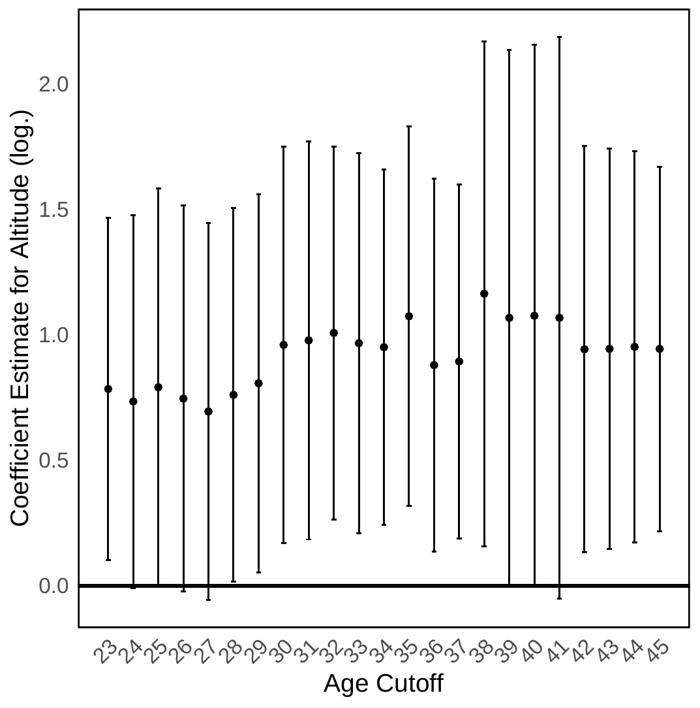
Notes: This figure represents the coefficient on the logarithm of altitude when estimating Equation 8 on the sub-sample of individuals aged 23–62 while trimming the lower bound from 23 to 45. The regressions follow those in Column 2 of Table 5.
| Entire sample | Male sample | Female sample | ||||
| (1) | (2) | (3) | (4) | (5) | (6) | |
| Altitude (log.) | 1.354 | 1.696 | 1.388 | 1.730 | 2.134 | 4.414 |
| (0.252)*** | (0.270)*** | (0.263)*** | (0.285)*** | (1.610) | (1.994)** | |
| [0.466]*** | [0.535]*** | [0.470]*** | [0.556]*** | [0.859]** | [1.193]*** | |
| Geography | Yes | Yes | Yes | Yes | Yes | Yes |
| Demography | No | Yes | No | Yes | No | Yes |
| Age structure | Yes | Yes | Yes | Yes | Yes | Yes |
| Ind. controls | Yes | Yes | Yes | Yes | Yes | Yes |
| Mahal | Yes | Yes | Yes | Yes | Yes | Yes |
| \(R^2\) | 0.060 | 0.065 | 0.059 | 0.063 | 0.068 | 0.074 |
| Observations | 9566 | 9566 | 8790 | 8790 | 775 | 775 |
Notes: This table reports estimates of Equation Equation 8 augmented with village-level age-share controls (five-year bins up to age 20, ten-year bins thereafter). Columns 1–2 report results for the full sample; Columns 3–4 focus on men and Columns 5–6 on women. All regressions include mahal (region) fixed effects and the set of geographic and demographic controls noted in the main text, as well as individual controls (age, age-squared, household size, Muslim religion, and sex ratio). Odd columns control for the logarithm of the distance to the closest river, potential caloric yield, precipitation and evapotranspiration; and maximum and minimum temperature; even columns further include the share that Muslims represent and the logarithm of total population. All columns present robust standard errors in parentheses and Conley standard errors in square brackets using a 20 km cut-off. \({}^{*}\, p < 0.1\), \({}^{**}\, p < 0.05\), \({}^{***}\, p < 0.01\).
8.1.0.2 Alternative data sources.
Because age is also recorded in the parish records for marriages and deaths, next we repeat the previous analysis using these data. However, these additional data sources have some limitations. First, age at marriage typically ranges on a narrow band, providing limited variation in the dependent variable and it does not belong to the recommended age range of 23–62. To mitigate this issue, our sample considers all marriages, including those of individuals marrying for the second, third, or more times.54 Second, only some of the recorded marriages include the month of marriage; and for those, an overwhelming majority occur in December and January. Thus, couples deciding to marry in other months may be systematically different, including having non-seasonal occupations, which could bias our results unless we control for this. Third, a methodological concern arises regarding who reported age information in these parish records, especially for age at death. While the deceased obviously could not report their own age, it remains unclear whether family members or the priest himself calculated or estimated it. If priests systematically computed ages (perhaps using birth records) or provided numerical assistance, this could confound our numeracy measures. To address this potential bias, we include register book times year fixed effects in our specifications, which effectively control for priest-specific recording practices. Regarding the age at death, for consistency, we limit the sample to include only individuals deceased between ages 23 and 62 and include month of death fixed effects to remain consistent with the marriage analysis.55
Table 15 reports the results when we use these alternative age sources. Columns 1–4 use the marriage records while Columns 5–8 employ deaths. We present individual-level regressions in Column 1, 2, 5 and 6; first with only the limited controls and then including village-level demographic information.56 Columns 3, 4, 7 and 8 are devoted to the ABCC index with the same controls as in Table Table 7.57
The results in Table 15 display positive coefficients on the logarithm of altitude across all specifications, except for Column 3. Although coefficients when using the ABCC index are never significant (possible due to the very limited sample sizes and limitations in the data), the results using individual-level data are in line with our previous findings.
| Marriages | Death | |||||||
| Individual level | ABCC (aggregate) | Individual level | ABCC (aggregate) | |||||
| (1) | (2) | (3) | (4) | (5) | (6) | (7) | (8) | |
| Altitude (log.) | 0.683 | 0.840 | -0.624 | 7.331 | 0.356 | -0.363 | -2.995 | -0.116 |
| (0.250)*** | (0.262)*** | (13.185) | (11.697) | (1.372) | (1.464) | (18.046) | (17.646) | |
| [0.301]** | [0.350]** | [12.702] | [11.697] | [0.716] | [0.589] | [12.134] | [11.759] | |
| Geography | Yes | Yes | Yes | Yes | Yes | Yes | Yes | Yes |
| Demography | No | Yes | No | Yes | No | Yes | No | Yes |
| Ind. controls | Yes | Yes | No | No | Yes | Yes | No | No |
| Village controls | No | No | Yes | Yes | No | No | Yes | Yes |
| Marriage controls | Yes | Yes | No | No | No | No | No | No |
| Year | No | No | No | No | Yes | Yes | No | No |
| Mahal | Yes | Yes | No | No | Yes | Yes | No | No |
| Book-Year | No | No | No | No | Yes | Yes | No | No |
| Marriage month | Yes | Yes | No | No | No | No | No | No |
| Death month | No | No | No | No | Yes | Yes | No | No |
| \(R^2\) | 0.170 | 0.171 | 0.249 | 0.336 | 0.172 | 0.173 | 0.283 | 0.294 |
| Observations | 5457 | 5457 | 62 | 62 | 2019 | 2019 | 58 | 58 |
Notes: This table presents the results of regressions relating village altitude (measured in logarithm) and numeracy skills using alternative age sources from parish records. Columns 1–4 use marriage records while Columns 5–8 employ death records. Columns 1, 2, 5, and 6 present individual-level regressions using a probit model for the (inverse) probability of age-heaping. Columns 3, 4, 7, and 8 present village-level regressions using OLS for the ABCC index and focusing on villages with at least 20 individuals in the sample. Individual-level regressions (Columns 1, 2, 5, 6) include individual controls: the logarithm of age, its square, and gender. These regressions also feature mahal fixed effects. Columns 1 and 2 further include the logarithm of the marriage number as a control, year and month of marriage fixed effects. Columns 5 and 6 include register book times year fixed effects to control for priest-specific recording practices and month of death fixed effects. Village-level regressions (Columns 3, 4, 7, 8) include average individual-level controls (the logarithm of age and its square). Regressions in Column 5–8 are estimated on individuals dying between ages 23 and 62. All regressions include village-level controls: the logarithm of the distance to the closest river, potential caloric yield, precipitation and evapotranspiration; and maximum and minimum temperature. Even numbered columns further include the percentage of Muslims in the village and the logarithm of total population. All columns present robust standard errors in brackets, and Conley standard errors in square brackets using a cut-off distance of 20 km. \({}^{*}\, p < 0.1\), \({}^{**}\, p < 0.05\), \({}^{***}\, p < 0.01\).
8.1.0.3 Household Head Numeracy and Difference-in-Differences.
As additional robustness checks for the household-level numeracy results, we examine two complementary specifications that provide further insights into the altitude-numeracy relationship.
Household head numeracy. First, we focus exclusively on household heads’ own age-heaping (Columns 1–2 in Table 16). While the household-level metrics in the main text capture how well household members’ ages are tracked, examining the head’s own age provides a more direct test of the relationship. We estimate a probit model where the dependent variable is the (inverse) probability of the head’s age being heaped. Despite this specification being inherently less informative,58 the coefficients on altitude are positive and statistically significant.
Difference-in-differences across age groups. Second, we exploit within-household variation in age precision across child age groups using a difference-in-differences design. The core insight is that age-tracking precision naturally degrades as children grow older: while parents can easily track a toddler’s age, maintaining precise knowledge of a teenager’s age requires sustained numerical record-keeping. If higher-altitude households also possess greater human capital, this “decay” of precision should be attenuated. Crucially, by including household fixed effects, we absorb all time-invariant household characteristics. Identification, therefore, relies exclusively on the interaction between village altitude and the older age group dummy, effectively comparing differential heaping rates across age groups within the same household. The dependent variable is the share of heaped ages within each age group; a negative interaction coefficient is consistent with higher-altitude households experiencing less decay in age precision as children grow older.
We implement this strategy using two specific age intervals (Columns 3 and 4) selected to balance conflicting constraints. First, the older group must allow for heaping without hitting focal points at both ends of the range (ruling out, e.g., 0–5 versus 10–15). Second, physical appearance must not provide obvious cues for estimation, which rules out teenagers in ranges like 14–19 where puberty offers clear visual markers. Consequently, Column 3 contrasts toddlers (ages 0–4) against early adolescents (ages 10–14), while Column 4 shifts the window slightly to compare ages 3–7 against 13–17.
The results are consistent with the hypothesis. In Column 3, the interaction term is negative and statistically significant (using both robust and Conley standard errors), indicating less pronounced precision decay at higher altitudes. The estimate in Column 4 is also negative, though it does not reach statistical significance, likely due to the smaller sample size in these specific age bins.
These results, presented in Table 16, are in line with our main findings. These tests are particularly demanding from an econometric standpoint: the first relies on a noisy binary outcome, while the second employs strict household fixed effects that absorb all cross-sectional variation in household characteristics. Despite these constraints on the data, all coefficients exhibit the expected signs and the key estimates remain statistically significant.
| Numeracy | Difference-in-differences | |||
| Household head | Ages 0–4 vs. 10–14 | Ages 3–7 vs. 13–17 | ||
| (1) | (2) | (3) | (4) | |
| Altitude (log.) | 1.488 | 1.594 | ||
| (0.316)*** | (0.341)*** | |||
| [0.626]** | [0.747]** | |||
| Altitude (log.) \(\times\) 10–14 | -0.163 | |||
| (0.047)*** | ||||
| [0.036]*** | ||||
| Altitude (log.) \(\times\) 13–17 | -0.100 | |||
| (0.058)* | ||||
| [0.077] | ||||
| Geography | Yes | Yes | No | No |
| Demography | No | Yes | No | No |
| Ind. controls | Yes | Yes | No | No |
| Mahal | Yes | Yes | No | No |
| Household fixed effects | No | No | Yes | Yes |
| \(R^2\) | 0.035 | 0.037 | 0.714 | 0.712 |
| Observations | 6031 | 6031 | 1744 | 1404 |
Notes: This table reports additional estimates of the relationship between altitude and household-level numeracy. Columns 1–2 estimate the (inverse) probability of household head age-heaping using a probit model. Columns 3–4 present difference-in-differences estimates comparing age-heaping rates across child age groups within households. Column 3 compares children aged 0–4 to those aged 10–14; Column 4 compares children aged 3–7 to those aged 13–17. The dependent variable in Columns 3–4 is the share of heaped ages within each age group. The interaction term (Altitude \(\times\) older age group) tests whether the increase in heaping for older children is attenuated at higher altitudes; negative coefficients indicate better tracking capacity. Columns 3–4 include household fixed effects, which absorb village-level variation including altitude; identification comes from the differential effect of altitude across age groups within households. Columns 1–2 control for the logarithm of the household head’s age and its square, household size, Muslim religion, and the share of women. Columns 1–2 include All regressions include mahal (region) fixed effects fixed effects; odd columns control for the logarithm of the distance to the closest river, potential caloric yield, precipitation and evapotranspiration; and maximum and minimum temperature; even columns further include the share that Muslims represent and the logarithm of total population. Columns 3 and 4 control for the number of children. All columns present robust standard errors in parentheses and Conley standard errors in square brackets using a 20 km cut-off. \({}^{*}\, p < 0.1\), \({}^{**}\, p < 0.05\), \({}^{***}\, p < 0.01\).
8.2 Robustness Checks for Mortality Analysis
To further assess the robustness of our mortality findings, we conducted several sensitivity checks analyzing alternative mortality outcomes. The results of these checks are presented in Table Table 17 in this Appendix.
Other death causes. First, we examine mortality from “other causes” —a residual category encompassing deaths not attributed to contagious diseases nor old age. If our finding of lower overall mortality at higher altitudes is robust, and specifically concentrated in respiratory diseases, we would expect to observe a higher proportion of deaths at higher altitudes classified as “other causes”. This is simply because if deaths from respiratory diseases are reduced, then deaths from other causes, which are presumably less affected by altitude, will naturally constitute a larger share of the remaining mortality. Table Table 17, Columns 1 and 2, present the analysis with the probability of dying from “other causes” as the dependent variable.
Old age. Second, we investigate the reporting of “old age” as a cause of death. A potential concern with historical cause-of-death data is differential reporting bias. If, at higher altitudes, record keepers were systematically more likely to attribute deaths to “old age” —perhaps due to less precise diagnoses or different cultural norms— this could confound our cause-specific mortality analysis. To assess this potential bias, we analyze the relationship between altitude and the probability of death being attributed to “old age”. Columns 3–4 of Table 17 present results for this outcome. Crucially, we expect to find no statistically significant relationship between altitude and the probability of death being attributed to “old age”.
Mortality at birth. Third, we conduct a placebo test by examining mortality recorded as occurring “at birth” or very shortly thereafter. Infant deaths in the immediate neonatal period are highly unlikely to be caused by contagious diseases transmitted through airborne or other environmental pathways, as newborns would not yet have been exposed to these pathogens. Deaths at birth are more likely due to congenital conditions, birth complications, or maternal health issues, factors that are not directly linked to population density or airborne disease transmission. Therefore, we should not expect altitude to have a significant association with mortality “at birth” if our primary mechanism is indeed related to a lower contagious disease burden at higher altitudes. Observing a significant effect of altitude on mortality “at birth” would suggest that some other, unobserved factor correlated with altitude is driving general mortality differences rather than the specific mechanism we propose. Table 17, Columns 5–6, present the results for the probability of death “at birth”.59
Because sources provided conflicting information whether erysipelothrix rhusiopathiae is a contagious disease, we run additional regressions considering it as contagious. This implies re-classifying also some deaths under “other causes”.60 Table Table 18 presents the results of this exercise, which do not differ substantively from our main findings.
Lastly, we also examine the robustness of our main mortality results to the inclusion of controls for population structure and when the outcome variable is the under-5 mortality rate (U5MR).61 These exercises are motivated by the fact that the age distribution of a population can influence mortality rates, particularly in historical contexts where infant and child mortality were high. Controlling for population structure and using a relative measure alleviate concerns about confounding factors. Table Table 19 presents the results, which do not differ substantively from our main findings.
| Other causes (exc. old age) | Old age | Died at birth (age \(\leq 5\)) | ||||
| (1) | (2) | (3) | (4) | (5) | (6) | |
| Altitude (log.) | 1.421 | 1.453 | -2.719 | -3.137 | 19.991 | 19.991 |
| (0.201)*** | (0.210)*** | (0.930)*** | (0.958)*** | (161.304) | (161.304) | |
| [0.385]*** | [0.405]*** | [2.376] | [2.389] | [31.876] | [31.876] | |
| Geography | Yes | Yes | Yes | Yes | Yes | Yes |
| Demography | No | Yes | No | Yes | No | Yes |
| Animals | Yes | Yes | Yes | Yes | Yes | Yes |
| Ind. controls | Yes | Yes | Yes | Yes | Yes | Yes |
| Year | Yes | Yes | Yes | Yes | Yes | Yes |
| Mahal | Yes | Yes | Yes | Yes | Yes | Yes |
| \(R^2\) | 0.064 | 0.067 | 0.309 | 0.314 | 0.376 | 0.376 |
| Observations | 8971 | 8971 | 8394 | 8394 | 226 | 226 |
Notes: This table presents the results of regressions relating village altitude (measured in logarithm) to the probability of dying of certain causes. Columns 1 and 2 focus on causes other than respiratory, contagious non-respiratory diseases and old age. Columns 3 and 4 focus on cases reported as dying of old age. Columns 5 and 6 focus on death at birth. All columns are estimated using a probit model. Odd columns control for the logarithm of the distance to the closest river, potential caloric yield, precipitation and evapotranspiration; and maximum and minimum temperature. Even columns further include the share that Muslims represent and the logarithm of total population. All columns include gender and the logarithm of the number of husbandry and draft animals. All regressions include mahal (region) fixed effects and year fixed effects. All columns present robust standard errors in brackets and Conley standard errors in square brackets using a cut-off distance of 20 km. \({}^{*}\, p < 0.1\), \({}^{**}\, p < 0.05\), \({}^{***}\, p < 0.01\).
| Cont., non-resp. (age \(\leq 5\)) | Cont., non-resp. (all sample) | Other causes (exc. old age) | ||||
| (1) | (2) | (3) | (4) | (5) | (6) | |
| Altitude (log.) | 0.181 | 0.451 | -0.561 | -0.477 | 1.302 | 1.309 |
| (0.556) | (0.596) | (0.312)* | (0.316) | (0.200)*** | (0.208)*** | |
| [0.909] | [0.835] | [0.810] | [0.792] | [0.293]*** | [0.306]*** | |
| Geography | Yes | Yes | Yes | Yes | Yes | Yes |
| Demography | No | Yes | No | Yes | No | Yes |
| Animals | Yes | Yes | Yes | Yes | Yes | Yes |
| Ind. controls | Yes | Yes | Yes | Yes | Yes | Yes |
| Year | Yes | Yes | Yes | Yes | Yes | Yes |
| Mahal | Yes | Yes | Yes | Yes | Yes | Yes |
| \(R^2\) | 0.257 | 0.262 | 0.213 | 0.215 | 0.065 | 0.068 |
| Observations | 3105 | 3105 | 8783 | 8783 | 8971 | 8971 |
Notes: This table presents the results of regressions relating village altitude (measured in logarithm) to the probability of dying of certain causes. Columns 1–2 focus on contagious, non-respiratory diseases for children aged five years or less, Columns 3–4 focus on the same causes for the entire population, and Columns 5–6 focus on other causes (excluding old age). All columns are estimated using a probit model. Odd columns control for the logarithm of the distance to the closest river, potential caloric yield, precipitation and evapotranspiration; and maximum and minimum temperature. Even columns further include the share that Muslims represent and the logarithm of total population. All columns include gender and the logarithm of the number of husbandry and draft animals. All regressions include mahal (region) fixed effects and year fixed effects. All columns present robust standard errors in brackets, and Conley standard errors in square brackets using a cut-off distance of 20 km. \({}^{*}\, p < 0.1\), \({}^{**}\, p < 0.05\), \({}^{***}\, p < 0.01\).
| Child death, (0/1) | Death age | Under-5 mortality rate (log.) | ||||
| (1) | (2) | (3) | (4) | (5) | (6) | |
| Altitude (log.) | -0.539 | -0.527 | 0.643 | 0.623 | -2.648 | -2.547 |
| (0.219)** | (0.219)** | (0.180)*** | (0.181)*** | (1.019)*** | (1.033)** | |
| [0.302]* | [0.256]** | [0.239]*** | [0.201]*** | [1.105]** | [0.990]** | |
| Geography | Yes | Yes | Yes | Yes | Yes | Yes |
| Demography | No | Yes | No | Yes | No | Yes |
| Population structure | Yes | Yes | Yes | Yes | No | No |
| Animals | Yes | Yes | Yes | Yes | Yes | Yes |
| Ind. controls | Yes | Yes | Yes | Yes | No | No |
| Year | Yes | Yes | Yes | Yes | Yes | Yes |
| Mahal | Yes | Yes | Yes | Yes | Yes | Yes |
| \(R^2\) | 0.058 | 0.059 | 0.005 | 0.005 | 0.140 | 0.140 |
| Observations | 7766 | 7766 | 7766 | 7766 | 1072 | 1072 |
Notes: This table presents the results of regressions relating village altitude (measured in logarithm) and the probability of dying before the age of five in columns 1–2, the age at death for the entire population in Columns 3–4 and the under-5 mortality rate in Columns 5–6 (\(log(1+ U5MR_{per 1000})\)). Columns 1 and 2 follow a probit model, Columns 3 and 4 follow a negative binomial model and Columns 5 and 6 follow an OLS model. Odd columns control for the logarithm of the distance to the closest river, potential caloric yield, precipitation and evapotranspiration; and maximum and minimum temperature. Even columns further include the share that Muslims represent and the logarithm of total population. Columns 1–4 include the percentage indiviaduals in 10-year age bins at the village level. All specifications include year fixed effects and control for the logarithm of the sex ratio, the logarithm of the number of husbandry and the logarithm of the number of draft animals. All regressions include mahal (region) fixed effects and year fixed effects. All columns present robust standard errors in brackets and Conley standard errors in square brackets using a cut-off distance of 20 km. \({}^{*}\, p < 0.1\), \({}^{**}\, p < 0.05\), \({}^{***}\, p < 0.01\).
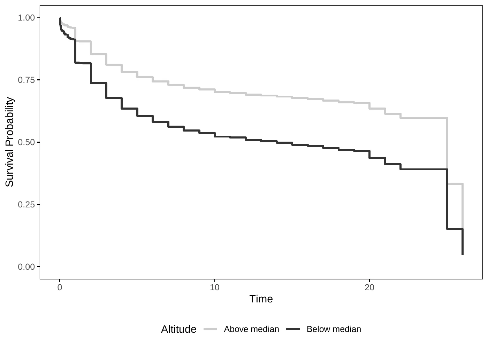
Notes: The figure displays Kaplan-Meier survival curves for individuals born in areas above and below the median altitude. The curves are adjusted for mahal and year fixed effects.
8.3 Marriage outcomes
Because the analysis of age at first marriage shows heaping at lower altitudes, the computation of the age gap and the mapping between spousals’ ages to gender equality could be affected. To address this concern, we re-estimated the marriage outcome using only non-heaped ages at first marriage.62 Table Table 20 presents the results of this exercise. The results remain qualitatively unchanged when focusing only on non-heaped ages, suggesting that age-heaping is unlikely to account for the observed relationship between altitude and marriage outcomes.
| Spousal age gap | Wife’s age | Groom’s age | ||||
| (1) | (2) | (3) | (4) | (5) | (6) | |
| Altitude (log.) | 0.034 | 0.045 | -0.040 | -0.032 | -0.014 | 0.012 |
| (0.020)* | (0.020)** | (0.015)*** | (0.015)** | (0.027) | (0.028) | |
| [0.032] | [0.037] | [0.040] | [0.038] | [0.057] | [0.055] | |
| Geography | Yes | Yes | Yes | Yes | Yes | Yes |
| Demography | No | Yes | No | Yes | No | Yes |
| Year | Yes | Yes | Yes | Yes | Yes | Yes |
| Mahal | Yes | Yes | Yes | Yes | Yes | Yes |
| \(R^2\) | 0.249 | 0.251 | 0.003 | 0.003 | 0.012 | 0.012 |
| Observations | 3382 | 3382 | 6401 | 6401 | 4016 | 4016 |
Notes: This table presents the results of regressions relating village altitude (measured in logarithm) to marriage patterns. Columns 1 and 2 examine spousal age gaps at first marriage, Columns 3 and 4 focus on bride’s age, and Columns 5 and 6 on groom’s age. Columns 1 and 2 are estimated by OLS and Columns 3–6 follow a negative binomial model. Odd columns control for the logarithm of the distance to the closest river, potential caloric yield, precipitation and evapotranspiration; and maximum and minimum temperature. Even columns further include the share that Muslims represent and the logarithm of total population. Regressions are estimated on the sub-sample of marriages where both spouses’ ages at first marriage are non-heaped. All specifications include year fixed effects and control for the logarithm of the sex ratio. All regressions include mahal (region) fixed effects. All columns present robust standard errors in brackets, and Conley standard errors in square brackets using a cut-off distance of 20 km. \({}^{*}\, p < 0.1\), \({}^{**}\, p < 0.05\), \({}^{***}\, p < 0.01\).
8.4 Migration
A potential concern is that the observed patterns of child mortality and numeracy by altitude might be confounded by migration. In particular, if individuals from higher altitudes disproportionately migrated to cities (e.g., following integration into the Russian Empire) or if selective migration occurred (more capable individuals leaving or arriving), this could bias the results.
To address this concern, we constructed a measure of incoming migration at the village level. Specifically, for each individual record of death in a given village, we checked whether their recorded place of birth was the same village. The match is based on the gender and birth year. If we did not find the corresponding birth in the given village, we classified this as an incoming migrant.
We then calculated, for each village, the total count of such incoming migrants as well as the share of migrants relative to the village’s population in 1831. To assess whether migration systematically differed across altitudes, we regressed this migration share on village altitude, controlling for walking time to the capital Yerevan (log).
The results are presented in Columns 1–4 of Table Table 21. Across specifications, there is a negative and statistically significant relationship between altitude and the number of immigrants, while the immigrant share shows no clear pattern. This negative gradient suggests that high-altitude areas, where we also observe higher human capital, are not the destination of choice for migrants. Consequently, the high numeracy levels observed in these regions are unlikely to be fully explained by selective in-migration.
For emigration, we proxy for individuals leaving by comparing surviving births to locally observed marriages. We first identify surviving births (recorded births minus deaths) and group them into non-overlapping three-year cohorts by village and gender. We then define a specific “marriage window” for each village based on minimum and maximum ages at first marriage. We classify individuals as emigrants if the number of surviving births in a cohort exceeds the number of local marriages recorded during that cohort’s expected marriage window. Intuitively, individuals who survived but did not marry locally within the expected age window are treated as potential emigrants.
The results, summarized in Columns 5–8 of Table 21, indicate that altitude is not significantly associated with the share of outgoing migrants across any of the specifications. This suggests that emigration patterns were not systematically associated with altitude, and therefore, selective emigration is unlikely to bias the observed links between altitude, child mortality, and numeracy.
While the method to approximate immigration is relatively sound, the emigration proxy is more indirect and potentially subject to measurement error. First, it assumes that all individuals marry, which may underestimate emigration if some individuals leave without marrying locally. Second, and more critically, emigration for marriage and setting up a new household typically occurs around marriage age (approximately 17 for women and 20 for men), which precedes the age window used in our numeracy analysis (23–62 years). This timing creates a potential selection concern: if emigrants systematically differ in numeracy skills from those who remain, our estimates would reflect the composition of the post-migration population rather than the pre-migration village characteristics. For instance, if more numerate individuals selectively emigrate from high-altitude villages, our estimated altitude-numeracy gradient would be attenuated or even reversed. Unfortunately, our data does not allow us to directly observe emigrants’ numeracy skills, as they would be recorded in destination village records rather than in their villages of origin. Additionally, under the hypothesis of selective emigration, we would expect sex ratios to differ systematically across altitudes.63 Figure 6 plots the sex ratio against altitude, showing no systematic relationship.
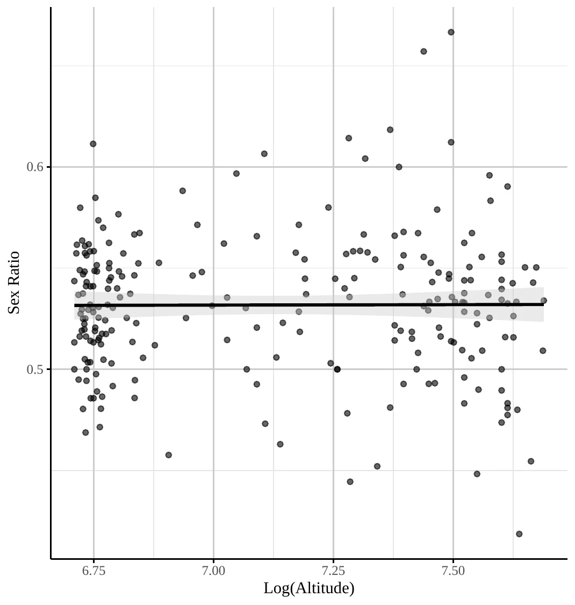
Notes: Scatterplot of the relationship between village sex ratio and altitude. Each dot represents a village, and the fitted line with its 95% confidence interval shows no systematic association.
Lastly, Figure 7 displays the raw correlation between villages’ altitude and the walking distance to Yerevan.
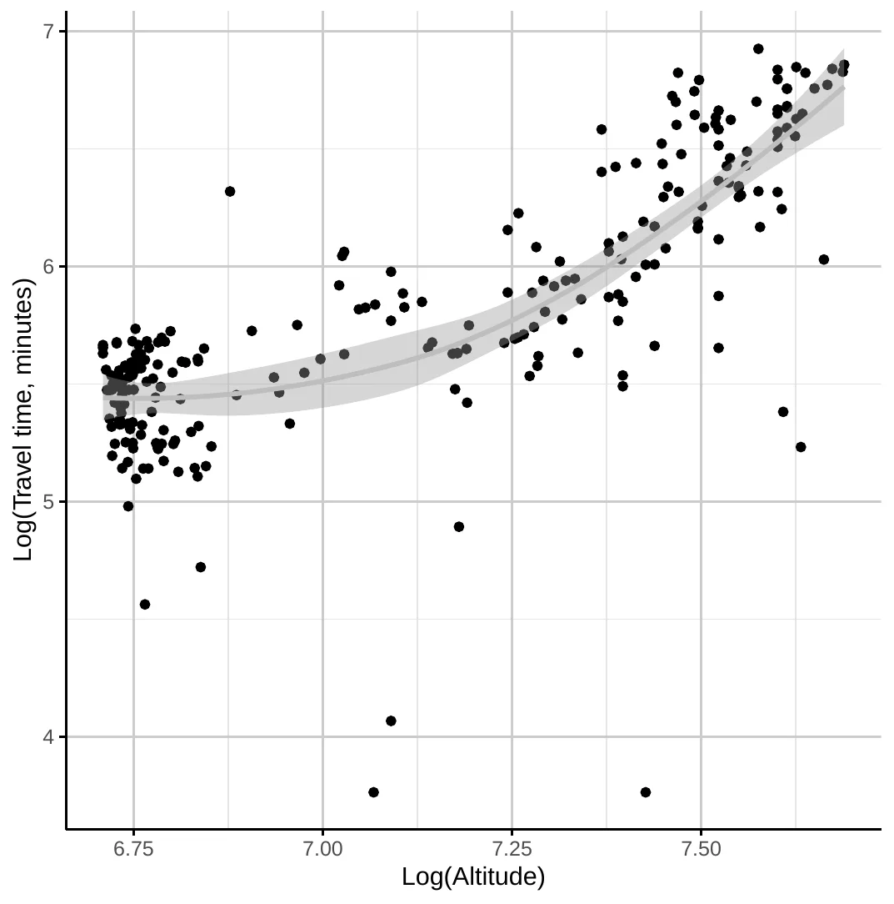
Notes: Scatterplot of village altitude against walking distance to Yerevan.
| Immigration | Emigration | |||||||
| Number of immigrants | Share of immigrants | Number of emigrants | Share of emigrants | |||||
| (1) | (2) | (3) | (4) | (5) | (6) | (7) | (8) | |
| Altitude (log.) | -0.589 | -0.490 | 0.007 | -0.003 | -1.254 | -0.761 | 0.159 | 0.130 |
| (0.192)*** | (0.197)** | (0.002)*** | (0.002)* | (0.708)* | (0.715) | (0.093)* | (0.082) | |
| [0.222]*** | [0.180]*** | [0.004] | [0.002] | [1.443] | [1.486] | [0.133] | [0.125] | |
| Geography | Yes | Yes | Yes | Yes | Yes | Yes | Yes | Yes |
| Demography | No | Yes | No | Yes | No | Yes | No | Yes |
| Animals | Yes | Yes | Yes | Yes | Yes | Yes | Yes | Yes |
| Year | Yes | Yes | Yes | Yes | Yes | Yes | Yes | Yes |
| Mahal | Yes | Yes | Yes | Yes | Yes | Yes | Yes | Yes |
| \(R^2\) | 0.040 | 0.042 | 0.256 | 0.371 | 0.066 | 0.068 | 0.512 | 0.521 |
| Observations | 4240 | 4240 | 4243 | 4243 | 478 | 478 | 478 | 478 |
Notes: This table presents the results of regressions relating village altitude (measured in logarithm) to migration. Columns 1 to 4 focus on immigration while Columns 5 to 8 on emigration. Within each migration category, the first two columns focus on the absolute number of mirants whereas the remaining consider their percentual representativeness relative to the 1831 population. Columns 1–2 and 5–6 are estimated using negative binomial models, while Columns 3–4 and 7–8 are estimated using OLS. Odd columns control for the logarithm of the distance to the closest river, potential caloric yield, precipitation and evapotranspiration; and maximum and minimum temperature. Even columns further include the share that Muslims represent and the logarithm of total population. All columns include the logarithm of the number of husbandry and draft animals and the logarithm of the distance to Yerevan. All regressions include mahal (region) fixed effects and birth-year fixed effects. All columns present robust standard errors in brackets and Conley standard errors in square brackets using a cut-off distance of 20 km. \({}^{*}\, p < 0.1\), \({}^{**}\, p < 0.05\), \({}^{***}\, p < 0.01\).
9 Main results under OLS
To complement the main analysis, where we utilized the estimation technique most appropriate given the data’s nature, this section presents the equivalent regressions estimated using OLS. Across all OLS specifications, we report robust and Conley standard errors.
| Husbandry animals above avg. | Husbandry animals (log.) | |||
| (1) | (2) | (3) | (4) | |
| Altitude (log.) | 0.152 | 0.466 | 0.894 | 1.009 |
| (0.288) | (0.238)* | (0.520)* | (0.450)** | |
| [0.180] | [0.123]*** | [0.514]* | [0.456]** | |
| Geography | Yes | Yes | Yes | Yes |
| Muslim share | No | Yes | No | Yes |
| Population (log.) | No | Yes | No | Yes |
| Draft animals (log.) | Yes | Yes | Yes | Yes |
| Mahal | Yes | Yes | Yes | Yes |
| \(R^2\) | 0.361 | 0.480 | 0.733 | 0.800 |
| Observations | 255 | 255 | 255 | 255 |
Notes: This table presents the results of regressions relating village altitude (measured in logarithm) and the probability of a village having an above-average number of husbandry animals in Columns 1–2; the expected number of husbandry animals in Columns 3–4. All columns follow an OLS model. Columns 1 and 3 control for the logarithm of the distance to the closest river, potential caloric yield, precipitation and evapotranspiration; and maximum and minimum temperature. Columns 2 and 4 further include the share that Muslims represent and the logarithm of total population. Columns 1–4 include the logarithm of the number of non-milk producing animals and husbandry animals. All regressions include mahal (region) fixed effects. All Columns present robust standard errors in brackets, and Conley standard errors in square brackets using a cut-off distance of 20 km. \({}^{*}\, p < 0.1\), \({}^{**}\, p < 0.05\), \({}^{***}\, p < 0.01\).
| Child death, (0/1) | Death age (log.) | |||
| (1) | (2) | (3) | (4) | |
| Altitude (log.) | -0.344 | -0.303 | 0.943 | 0.965 |
| (0.068)*** | (0.070)*** | (0.224)*** | (0.230)*** | |
| [0.131]*** | [0.120]** | [0.430]** | [0.390]** | |
| Geography | Yes | Yes | Yes | Yes |
| Demography | No | Yes | No | Yes |
| Animals | Yes | Yes | Yes | Yes |
| Ind. controls | Yes | Yes | Yes | Yes |
| Year | Yes | Yes | Yes | Yes |
| Mahal | Yes | Yes | Yes | Yes |
| \(R^2\) | 0.068 | 0.069 | 0.068 | 0.069 |
| Observations | 9589 | 9589 | 9016 | 9016 |
Notes: This table presents the results of regressions relating village altitude (measured in logarithm) and the probability of dying before the age of five in columns 1–2 and the age at death for the entire population in Columns 3–4. All columns are estimated using an OLS model. Columns 1 and 3 control for the logarithm of the distance to the closest river, potential caloric yield, precipitation and evapotranspiration; and maximum and minimum temperature. Columns 2 and 4 further include the share that Muslims represent and the logarithm of total population. Columns 1–4 include gender and the logarithm of the number of husbandry and draft animals. All regressions include mahal (region) fixed effects and year fixed effects. All columns present robust standard errors in brackets and Conley standard errors in square brackets using a cut-off distance of 20 km. \({}^{*}\, p < 0.1\), \({}^{**}\, p < 0.05\), \({}^{***}\, p < 0.01\).
| Resp. dis. (age \(\leq 5\)) | Resp. dis. (all sample) | Cont., non-resp. (age \(\leq 5\)) | Cont., non-resp. (all sample) | |||||
| (1) | (2) | (3) | (4) | (5) | (6) | (7) | (8) | |
| Altitude (log.) | -0.428 | -0.602 | -0.300 | -0.332 | -0.043 | 0.003 | -0.136 | -0.118 |
| (0.118)*** | (0.119)*** | (0.063)*** | (0.064)*** | (0.046) | (0.047) | (0.027)*** | (0.027)*** | |
| [0.167]** | [0.201]*** | [0.098]*** | [0.111]*** | [0.093] | [0.087] | [0.096] | [0.088] | |
| Geography | Yes | Yes | Yes | Yes | Yes | Yes | Yes | Yes |
| Demography | No | Yes | No | Yes | No | Yes | No | Yes |
| Animals | Yes | Yes | Yes | Yes | Yes | Yes | Yes | Yes |
| Ind. controls | Yes | Yes | Yes | Yes | Yes | Yes | Yes | Yes |
| Year | Yes | Yes | Yes | Yes | Yes | Yes | Yes | Yes |
| Mahal | Yes | Yes | Yes | Yes | Yes | Yes | Yes | Yes |
| \(R^2\) | 0.140 | 0.151 | 0.073 | 0.077 | 0.263 | 0.266 | 0.190 | 0.190 |
| Observations | 3490 | 3490 | 8971 | 8971 | 3490 | 3490 | 8971 | 8971 |
Notes: This table presents the results of regressions relating village altitude (measured in logarithm) to the probability of dying of certain causes. Columns 1–4 focus on respiratory diseases and Columns 5–8 focus on contagious, non-respiratory diseases. Columns 1–2 and 3–6 are estimated on a subsample consisting of children aged five years or less, while Columns 3–4 and 7–8 consider the entire population. All columns are estimated using an OLS model. Odd columns control for the logarithm of the distance to the closest river, potential caloric yield, precipitation and evapotranspiration; and maximum and minimum temperature. Even columns further include the share that Muslims represent and the logarithm of total population. All columns include gender and the logarithm of the number of husbandry and draft animals. All regressions include mahal (region) fixed effects and year fixed effects. All columns present robust standard errors in brackets and Conley standard errors in square brackets using a cut-off distance of 20 km. \({}^{*}\, p < 0.1\), \({}^{**}\, p < 0.05\), \({}^{***}\, p < 0.01\).
| Entire sample | Male sample | Female sample | ||||
| (1) | (2) | (3) | (4) | (5) | (6) | |
| Altitude (log.) | 0.149 | 0.174 | 0.145 | 0.168 | 0.275 | 0.457 |
| (0.028)*** | (0.029)*** | (0.028)*** | (0.029)*** | (0.314) | (0.332) | |
| [0.054]*** | [0.055]*** | [0.051]*** | [0.053]*** | [0.137]** | [0.130]*** | |
| Geography | Yes | Yes | Yes | Yes | Yes | Yes |
| Demography | No | Yes | No | Yes | No | Yes |
| Ind. controls | Yes | Yes | Yes | Yes | Yes | Yes |
| Mahal | Yes | Yes | Yes | Yes | Yes | Yes |
| \(R^2\) | 0.019 | 0.020 | 0.015 | 0.016 | 0.034 | 0.037 |
| Observations | 9566 | 9566 | 8790 | 8790 | 778 | 778 |
Notes: This table presents the results of regressions relating village altitude (measured in logarithm) and numeracy skills, measured by the (inverse) probability of age-heaping. Columns 1 and 2 focus on the whole sample, Columns 3 and 4 on men, and Columns 5 and 6 on women. All columns are estimated using an OLS model. Odd columns control for the logarithm of the distance to the closest river, potential caloric yield, precipitation and evapotranspiration; and maximum and minimum temperature. Even columns further include the share that Muslims represent and the logarithm of total population. All columns include individual-level controls: age, its square, household size and the share women represent in each household. All regressions include mahal (region) fixed effects. All columns present robust standard errors in brackets and Conley standard errors in square brackets using a cut-off distance of 20 km. \({}^{*}\, p < 0.1\), \({}^{**}\, p < 0.05\), \({}^{***}\, p < 0.01\).
| Number fem. candidates (log.) | ||
| (1) | (2) | |
| Altitude (log.) | -1.404 | -1.479 |
| (0.425)*** | (0.444)*** | |
| [0.443]*** | [0.412]*** | |
| Geography | Yes | Yes |
| Demography | No | Yes |
| Distance Yerevan, Yazidi share | Yes | Yes |
| Election Year | Yes | Yes |
| Mahal | Yes | Yes |
| \(R^2\) | 0.217 | 0.222 |
| Observations | 204 | 204 |
Notes: This table presents the results of regressions relating village altitude (measured in logarithm) and female agency, proxied by electoral outcomes. In columns 1 and 2 the outcome is the number of female candidates. All columns are estimated using an OLS model. Odd columns control for the logarithm of the distance to the closest river, potential caloric yield, precipitation and evapotranspiration; and maximum and minimum temperature. Even columns further include the share that Muslims represent and the logarithm of total population. All columns control for the (logarithm) of the distance to Yerevan and the share the Yazidi ethnic minority represents. All regressions include mahal (region) fixed effects and election-year fixed effects. All columns present robust standard errors in brackets and Conley standard errors in square brackets using a cut-off distance of 20 km. \({}^{*}\, p < 0.1\), \({}^{**}\, p < 0.05\), \({}^{***}\, p < 0.01\).
| Wife’s age (log.) | Groom’s age (log.) | |||
| (1) | (2) | (3) | (4) | |
| Altitude (log.) | -0.071 | -0.055 | -0.024 | -0.003 |
| (0.016)*** | (0.016)*** | (0.017) | (0.017) | |
| [0.047] | [0.047] | [0.051] | [0.048] | |
| Geography | Yes | Yes | Yes | Yes |
| Demography | No | Yes | No | Yes |
| Year | Yes | Yes | Yes | Yes |
| Mahal | Yes | Yes | Yes | Yes |
| \(R^2\) | 0.129 | 0.132 | 0.157 | 0.161 |
| Observations | 7232 | 7232 | 7227 | 7227 |
Notes: This table presents the results of regressions relating village altitude (measured in logarithm) and marriage age outcomes. Columns 1 and 2 focus on the wife’s age at marriage and Columns 3 and 4 on the groom’s age at marriage. All columns are estimated using an OLS model. Odd columns control for the logarithm of the distance to the closest river, potential caloric yield, precipitation and evapotranspiration; and maximum and minimum temperature. Even columns further include the share that Muslims represent and the logarithm of total population. All specifications include year fixed effects and control for the logarithm of the sex ratio. All regressions include mahal (region) fixed effects. All columns present robust standard errors in brackets and Conley standard errors in square brackets using a cut-off distance of 20 km. \({}^{*}\, p < 0.1\), \({}^{**}\, p < 0.05\), \({}^{***}\, p < 0.01\).
| Number of craftsmen (log.) | ||
| (1) | (2) | |
| Altitude (log.) | -0.568 | -0.230 |
| (0.830) | (0.563) | |
| [0.803] | [0.657] | |
| Geography | Yes | Yes |
| Demography | No | Yes |
| Animals | Yes | Yes |
| Mahal | Yes | Yes |
| \(R^2\) | 0.542 | 0.721 |
| Observations | 255 | 255 |
Notes: This table presents the results of regressions relating village altitude (measured in logarithm) and the presence of craftsmen. Columns 1 and 2 consider the logarithm of the number of craftsmen in a village. All columns follow an OLS model. Odd columns control for the logarithm of the distance to the closest river, potential caloric yield, precipitation and evapotranspiration; and maximum and minimum temperature. Even columns further include the share that Muslims represent and the logarithm of total population. All regressions include mahal (region) fixed effects. All columns present robust standard errors in brackets and Conley standard errors in square brackets using a cut-off distance of 20 km. \({}^{*}\, p < 0.1\), \({}^{**}\, p < 0.05\), \({}^{***}\, p < 0.01\).
{#tbl-marriages_ols}
10 Data
10.0.0.1 Overview.
This section provides a detailed description of all data sources and the variable constructions used in the analysis. We organize the discussion by data source: geographic and climatic controls, the 1831 Census, parish records, modern outcomes, migration proxies, and data-quality diagnostics.
10.0.0.2 Geographic and GIS controls (village level).
All geographic and climatic variables are constructed at the village level by matching village coordinates to external GIS layers using QGIS.
Elevation. We extract mean elevation within a 1 km buffer around each village centroid from the Global Multi-resolution Terrain Elevation Data 2010 (GMTED2010), using the Mean Statistic product at 30 arc-second resolution (Danielson and Gesch 2011).
Climatic variables. Minimum and maximum absolute air temperature, annual precipitation, and annual potential evapotranspiration are obtained from georeferenced isoline shapefiles published by the Armenian National SDI Geoportal.64 We interpolate village-level values from the isolines using inverse-distance weighting.
Caloric suitability. Potential caloric yield is taken from the post-1500 Caloric Suitability Index of Galor and Özak (2016), which provides global gridded estimates of the caloric potential of land based on agroclimatic conditions.
River distance. Distance to the nearest river is computed from the inland water network shapefile for Armenia provided by DIVA-GIS (DIVA-GIS 2024).
10.0.0.3 Census 1831: village level.
From the 1831 Russian Imperial Census we extract village population totals, religious and gender composition, household counts, and occupational counts. Livestock holdings are aggregated into two categories: milk-producing animals (cows, calves, and sheep) and non-milk-producing animals (buffaloes, horses, donkeys, and oxen). Population density is measured as total population within a 5 km buffer around each village centroid, computed using the coordinates of 120 additional villages surrounding our study area. The number of Armenian women in each village is used to construct the denominator for fertility measures.
10.0.0.4 Census 1831: individual and household data.
Individual ages are recorded in the census for male household members and for female household heads (typically widows); for each person we use the non-missing recorded age. Household size and the share of women are computed from male and female counts within each household. Numeracy is proxied by age heaping: individuals whose reported age is a multiple of five are coded as heaped (i.e., displaying low numeracy). At the village level, numeracy is measured by the ABCC index, constructed from the Whipple index over ages 23–62 and capped at 100. For the age-structure robustness checks, we compute village-level age shares in five-year bins up to age 20 and ten-year bins thereafter.
10.0.0.5 Household numeracy measures.
We construct three household-level numeracy indicators: (i) the probability of systematic age heaping in the household, computed as the binomial probability that the observed number of heaped ages arises by chance given the household size; (ii) the share of non-heaped ages among children aged 3–18; and (iii) the maximum non-heaped child age (up to 25), interpreted as a “numeracy horizon” reflecting the household’s capacity to track ages over time. We also use the household head’s own age-heaping indicator as a direct measure of head numeracy. For the difference-in-differences specifications, the outcome variable is the share of heaped ages within each of two child age groups (0–4 vs. 10–14; 3–7 vs. 13–17), computed within each household.
10.0.0.6 Parish records: marriages, births, and deaths.
Marriage registers provide each spouse’s age at marriage, the marriage order (first, second, etc.), and the date of the ceremony. Spousal age gaps are computed as the difference between the logarithm of the groom’s and bride’s ages. Alternative numeracy analyses restrict the sample to marriages in which both spouses report non-heaped ages.
Birth registers record the year and, in most cases, the month of each birth. Village-year fertility is computed as the number of births divided by the number of Armenian women recorded in the 1831 Census.
Death registers record the age at death, the date of death, and—in most cases—the cause. Causes of death are standardized using a classification dictionary and grouped into three categories: respiratory diseases, contagious non-respiratory diseases, and a residual category (see Table 13). Alternative codings reclassify ambiguous causes (e.g., erysipelothrix rhusiopathiae). Additional binary indicators capture infant death (age \(\leq 5\)) and death at birth (age 0).
10.0.0.7 Mortality rates and survival.
Under-5 mortality rates (U5MR) are constructed by assigning each death to the corresponding birth cohort based on village, year of birth, and gender, and dividing by the number of births in that cohort; rates are expressed per 1,000 live births. For the survival analysis, we define an observed-death indicator and compute time-to-death as the difference between the age at death and the minimum observed age in the sample.
10.0.0.8 Modern outcomes.
Contemporary outcomes are drawn from Armenian village council election data (2016). The outcome variables include the number of female candidates, the share of female candidates among all candidates, and the share of elected candidates who are women. Controls for this analysis include the walking distance from the village to Yerevan and the share of the Yazidi ethnic minority.
10.0.0.9 Migration.
Immigration is proxied by identifying individuals whose death is recorded in a village but whose corresponding birth (matched by gender and birth year) does not appear in that village’s birth records. The count and share (relative to 1831 population) of such individuals provide village-level immigration measures.
Emigration is proxied by comparing the number of surviving births (recorded births minus deaths) in non-overlapping three-year cohorts—defined by village and gender—to the number of locally recorded marriages during each cohort’s expected marriage window. The marriage window is determined by village- and gender-specific minimum and maximum ages at first marriage. Individuals who survived but did not marry locally within the expected age range are treated as potential emigrants.
10.0.0.10 Data quality diagnostics.
Missing-data ratios for births and deaths are computed as the proportion of observations with missing month-year information within 60-month blocks. To validate age-heaping patterns, we benchmark the 1831 age distribution against the 1897 General Census of the Russian Empire (Figure Figure 2). Walking-time data to Yerevan, used to illustrate the altitude–distance correlation, are computed from the terrain-adjusted least-cost path.
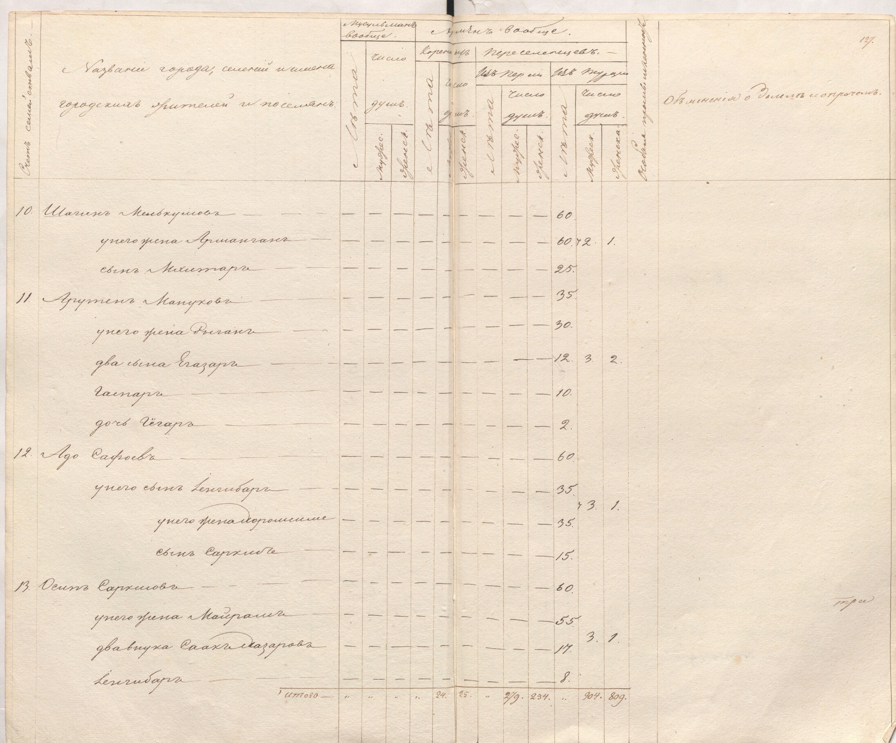
References
Footnotes
It posits that a longer expected lifespan increases the returns to human capital investment.↩︎
In Cervellati and Sunde (2011, 2015), variations in country-level mortality rates are associated with differences in the timing of economic take-off and broader patterns of global development. This paper provides empirical evidence consistent with the pivotal link between longevity and human capital investment central to their framework.↩︎
See also Woods (2003) on the relationship between density and mortality. Similarly, Dobson (1997, 147) lists elevations above 400 feet and distance from trading centers among the defining features of “very healthy places” in England.↩︎
As Cinnirella et al. (2017) demonstrates, increased birth spacing served as a key strategy for reducing fertility in England between 1540 and 1850.↩︎
High mountain ranges and rugged terrain increase trading costs (Fernández-Villaverde et al. 2023; Frensch et al. 2023; Giuliano et al. 2013), limit openness, and can worsen political and ethnic divisions (Michalopoulos 2012; Jimenez-Ayora and Ulubaşoğlu 2015).↩︎
For instance, studies of contemporary African economies might be confounded by the presence of local missions and health posts, while rural-urban migration and modern communication can expose populations to external cultural influences.↩︎
For context, 300 mm of precipitation is typical of Europe’s arid Mediterranean regions (e.g., Almería, Piraeus, Cagliari). In comparison, cities like Cologne, Oslo, and Liverpool receive approximately 800 mm of annual precipitation. See https://en.wikipedia.org/wiki/List_of_cities_by_average_precipitation.↩︎
Mortality has a limited role in explaining the demographic transition in Madsen and Strulik (2023), echoing Hazan and Zoabi (2006).↩︎
See Voigtlander and Voth (2013; Baten and Pleijt 2022; Ager et al. 2026) on the link between pastoral agriculture and female autonomy.↩︎
See also Hu (2025) and Croix et al. (2019). Other studies, such as Black et al. (2005) and Angrist et al. (2010), find no evidence of the trade-off, though their use of twin births as an instrument has been criticized by Bhalotra and Clarke (2019).↩︎
Age heaping refers to the tendency to report ages in rounded numbers (multiples of five or ten).↩︎
Russian Imperial censuses served administrative purposes, tracking taxable individuals and military conscripts rather than collecting demographic data. These censuses were essential for managing newly incorporated territories into the Empire, like Armenia. The possibility of selective age misreporting to avoid conscription (recruitment duty, rekrutskaya povinnost) exists but does not appear to be a concern. First, recruitment ages ranged between 20 and 35, see Brockhaus and Efron (1899), and avoidance would imply bunching just before or after these threshold ages. Figure Figure 2 in the Appendix shows no such patterns. Second, the Armenian region under Imperial Russian rule initially retained the same obligations as under Persian rule. As stated in the 1827 administrative rules: “This can be done if we take it as a rule that they [Armenians] are not required to do more than what was required by the previous government”, Paskevich (1978). Considering that Persians did not enforce conscription, this suggests that Armenians were not subject to recruitment duty either.↩︎
Otherwise, population density would be underestimated in fringe villages.↩︎
As illustrated in Figure Figure 2 in the Appendix, the extent of age heaping in the 1831 census closely resembles that in the 1897 census, implying that such reporting patterns are not idiosyncratic to the earlier source.↩︎
Standard age heaping indices like Whipple’s and ABCC are population-level measures.↩︎
See A’Hearn et al. (2009) for details on the ABCC index. Whenever possible, we use only the population aged 23–62.↩︎
Even with digitized names, matching would remain challenging due to frequent spelling inconsistencies.↩︎
See Carmichael (2011) for the relationship between women’s age at marriage, spousal age gap, and female agency, and Voigtlander and Voth (2013) for the link between agricultural specialization and female autonomy.↩︎
Births per woman is not a standard variable in demography. Because we lack population by age and gender, we cannot compute the total fertility rate (TFR). We use the number of births per woman to proxy for fertility, as an in-between measure between the crude birth rate and the total fertility rate: it resembles the TFR in that we divide by a measure of the female population; and it shares with the crude birth rate that we use the entire population as opposed to those of childbearing age.↩︎
The Parish records include names, but we did not digitize them due to time constraints and the limited feasibility of matching the names.↩︎
Implicitly, we assume that, for a given village, year of birth, and gender, individuals whose births were recorded, but whose deaths were not recorded in subsequent years survived until the end of our observation period. For instance, if two males are recorded as being born in 1820 in a particular village, and one death is registered in 1830 for a male born in the same year and village, we assume the other male survived at least until 1830.↩︎
Appendix Section 8.4 provides crude estimates of migration.↩︎
This pattern was documented as early as 1855 by John Snow (1855), drawing on the 1847 Registrar-General’s comparison of London with the sparsely populated South Midland district. Snow observed that diseases “most fatal in infancy and early childhood” (including bronchitis, pneumonia, and whooping cough) were significantly more prevalent in the dense urban center. Crucially, the diseases exhibiting the steepest urban-rural mortality gradient were primarily airborne, supporting the link between density and transmission.↩︎
Alternatively, it can be argued that a more intense contact with husbandry animals provided an evolutionary resistance to animal-originated viruses (Diamond 1999; Franck et al. 2022), most of which are transmitted by air (Diamond 1999 Table 11.1). Although we cannot differentiate between the two possibilities, both are consistent with a lower prevalence of airborne diseases in higher-altitude locations.↩︎
For example, cholera is primarily waterborne, with risk tied to proximity to a contaminated source rather than overall density (J. Snow 1855). Vector-borne diseases like typhus, transmitted by lice, are linked more to crowding and hygiene conditions than to ambient population density itself (Raoult and Roux 1999).↩︎
Temperature, precipitation and evapotranspiration take present-day values. However, even if these agroclimatic conditions have changed since the 19th century, as long as changes are proportional across altitudes, they should not affect our results.↩︎
We collected data on travel distance from each village to Yerevan to account for potential urban influences and disentangle urbanization from altitude’s effect.↩︎
In the paper, we employ the statistical models that best suit our data structure —probit for binary outcomes and negative binomial regression for count data. Tables Table 22–Table 28 in Appendix Section 9 reproduce the main results under OLS models.↩︎
Using the median instead of the average yields substantively identical conclusions.↩︎
Husbandry animals include cows, calves, and sheep.↩︎
Population density is measured in a five-kilometer radius around each village. We compiled information for 120 additional villages to ensure reliable measurements in fringe areas near our study area’s boundaries.↩︎
{#foot-animal_contact} Although more intense contact with farm animals provides a long-term evolutionary advantage against airborne diseases (Diamond 1999), the time frame under which it operates far exceeds the scope of our project. Klous et al. (2016) reviews the medical literature on the topic, finding increased pathogen transmission. We account for the number of animals to factor in this transmission vector.↩︎
Unfortunately, parish records have limited individual-level control variables which restricts our ability to control for other potential confounders at the individual level.↩︎
The value in Column 2 yields a very similar estimate: a 0.29 percentage-point lower probability. However, we acknowledge that population size may be a problematic control as it is likely correlated with altitude.↩︎
Re-estimating the impact of altitude on age at death for the sub-sample of individuals that died after age 10 yields a coefficient equal to 0.146, significant at the 1% level. This corresponds to an approximately 0.069-year higher average lifespan.↩︎
Table Table 19 in the Appendix further adds controls for population structure (the percentage of individuals in each age group) to account for potential differences in the age distribution across villages and it also includes the under-5 mortality rate as an additional outcome variable. Both specifications alleviate concerns regarding the potential confounding effect of population structure on mortality. The results do not change substantively.↩︎
The table presents the coefficients from the Cox model, not the implied hazard ratios. Hence, a negative coefficient indicates a lower probability of dying at a given age.↩︎
When classifying erysipelothrix rhusiopathiae, sources offered conflicting information on whether it should be classified as a contagious disease. Armenian sources suggest it is contagious, while English sources do not. We classify it here as a non-contagious disease, but Table Table 18 in the Appendix presents the results when it is classified as contagious. This has implication only for Columns 3–4 and when we analyze “other causes of death” in the Appendix.↩︎
These variables control for potential resource dilution effects or economies of scale in household size and potential gender biases in parental investment in human capital (e.g., son preference).↩︎
Age-heaping is very common in our data, with only about 5% of adults reporting an age not ending in 5 or 0. This characteristic of the data renders estimating the effect of altitude more challenging, given the large proportion of zeroes in the sample.↩︎
Alternatively, in light of Hazan and Zoabi (2006), the results could be interpreted as reflecting an increase in health afforded by higher altitude. It would encourage parents to invest more in human capital while, simultaneously, increasing longevity.↩︎
If this were the case, because of the fertility differentials implied by the quality-quantity trade-off, households with a numerically illiterate head would have more children who would be qualified as practicing age-heaping, artificially favoring our hypothesis.↩︎
In this exercise, we keep all household members aged 10 or more. Assuming random reporting, the probability of an age ending in 0 or 5 is \(p=0.2\). The resulting metric follows the cumulative distribution function (CDF) of a binomial distribution \(B(N, 0.2)\).↩︎
We exclude toddlers (under 3) as their ages are visually verifiable, and limit the upper bound to dependents.↩︎
Households wherein all ages are multiples of five are excluded from this analysis.↩︎
These are the counterparts of the individual-level controls in Table Table 5.↩︎
See the Fertility section on page for a discussion of the methodology.↩︎
To address the concern that these results might be driven by the inclusion of age-heaped observation (a natural worry given that our main analysis uses age-heaping as a measure of numeracy) we re-estimate all specifications on the subsample of marriages in which neither spouse reports a heaped age. Point estimates retain the same signs throughout, although they lose statistical significance due to the reduced sample size. These results are reported in Table 20 in the Appendix.↩︎
In Figure Figure 7 we further show that high altitude villages tend to be further away from the capital. This suggests that they faced higher trade costs, another factor likely associated with lower real income.↩︎
For example, while typhus can be either contagious or non-contagious, the parish records do not specify the type. Based on the evidence in Armenian et al. (1993), the contagious form was predominantly observed in Armenia.↩︎
Regressions include the logarithm of the marriage number as a control.↩︎
Only 76 cases do not record the month of death.↩︎
As mentioned above, regressions on age at marriage include the logarithm of the marriage number, while regressions focusing on age at death include register book times year fixed effects.↩︎
We replace the average logarithm of age and its square with its equivalents, this is, the average logarithm of age at marriage and at death and their squares.↩︎
It reduces each household to a single binary outcome (heaped or not), discarding valuable information about variation across household members.↩︎
Regional fixed effects combined with perfect prediction in the probit model necessitate dropping several mahals without variation in mortality at birth, substantially reducing the sample size. As a robustness check, we estimate the same specification by OLS, which retains observations dropped due to perfect prediction and increases the sample to over 3,000 observations. The OLS results are in line with our main finding of no significant association between altitude and mortality “at birth”.↩︎
This reclassification is immaterial for “contagious, respiratory diseases”, “old age” and “at birth” deaths.↩︎
The under-5 mortality rate is defined as the number of deaths of children under five years of age per 1,000 live births in a given year. Deaths are originally recorded by year of occurrence. To compute the cohort-based under-5 mortality rates, we assign each death to the corresponding birth cohort based on the year of birth. Then, under-5 mortality rates follow: \(U5MR_{j,t} = \frac{D_{0--5_{j,t}}}{B_{0--5_{j,t}}} \times 1000\) Because these data is drawn from diocesan records, it refers only to Christian births and deaths.↩︎
In principle, a similar exercise could be conducted for heaped marriage ages. However, age at first marriage displays little variation which is drastically reduced when focusing only on heaped ages. This makes it challenging to identify any systematic relationship between altitude and marriage outcomes within this restricted sample. Moreover, there are only 225 marriages with both spouses’ ages heaped, limiting statistical power. Similar concerns apply to the analysis of age at marriage. Finally, regressions on the age gap when only one spouse displays a heaped age provide qualitatively similar results to those presented when no heaping is present. In particular, in the most comprehensive specification, the coefficient on the logarithm of altitude is 0.027 (0.0328) when the groom age is heaped and 0.040 (0.085) when the bride age is heaped.↩︎
The possibility of both the groom and the bride emigrating from the same village remains.↩︎
The data were accessed via the WFS endpoint at
gs.cens.am, hosted on the Open Data Armenia platform (https://data.opendata.am). The specific layers used are: Absolute air temperature (max), Absolute air temperature (min), Annual amount of precipitation, and Annual potential evapotranspiration. These files were publicly available at the time of data collection but are no longer accessible online.↩︎